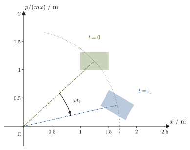

第46章対称性と保存則・ポアソン括弧・正準変換
第43章でラグランジュ形式を学び，第44章で最小作用の原理というより深い基礎にそれを位置づけ，第45章ではハミルトンの正準方程式によって運動を位相空間 $(q_i,p_i)$ の言葉で書き直した．第VI部の締めくくりとなる本章では，こうした「書き換え」が単なる計算上の言い換えではなく，自然界の対称性（symmetry）と保存則（conservation law）という深い関係を照らし出し，さらに古典力学から量子力学・統計力学へと続く一本道を用意していたことを見る．
高校物理では，運動量保存則・角運動量保存則・エネルギー保存則は，衝突・円運動・仕事とエネルギーという別々の場面で，それぞれ独立の法則として登場したはずである．ところが解析力学の立場から見ると，この3つの保存則は，「ラグランジアン $L$ がある種の対称性（空間の並進，空間の回転，時間の並進）をもつ」というたった一つの原理の，異なる現れにすぎない．この驚くべき統一を主張するのが，数学者エミー・ネーター（Emmy Noether，1882–1935）が1918年に発表したネーターの定理（Noether's theorem）である．
本章ではさらに，正準方程式 $\dot q_i=\pdiff{H}{p_i},\ \dot p_i=-\pdiff{H}{q_i}$ を，$q_i$ と $p_i$ を対等に扱う一つの演算——ポアソン括弧（Poisson bracket）$\{A,B\}$（46.3節で定義する）——にまとめ直す．この書き換えは単なる記法の整理ではない．ポアソン括弧の基本関係 $\{q_i,p_j\}=\delta_{ij}$（$\delta_{ij}$ は $i=j$ のとき1，$i\neq j$ のとき0を表す記号）が，量子力学における交換関係 $[\hat q_i,\hat p_j]=i\hbar\delta_{ij}$（$[\hat q,\hat p]=\hat q\hat p-\hat p\hat q$ は掛ける順序を入れ替えたときの差で，量子力学で学ぶ．不確定性原理を生み出す数学的な源である）に，$\{\ ,\ \}\to\frac1{i\hbar}[\ ,\ ]$ という置き換えのもとでそのまま対応することを，ここで最初に垣間見る（量子力学そのものは別教材で学ぶので，本章では対応の存在を指摘するだけにとどめる）．さらに，$(q,p)$ の組を別の変数の組 $(Q,P)$ に取り替えても正準方程式の形を保つ正準変換（canonical transformation）という自由度と，その帰結であるリウヴィルの定理（Liouville's theorem，位置と運動量をまとめた空間である位相空間の中で，多数の初期条件の集まりが占める領域の広さは，時間が経っても変わらないという定理）にも触れる．リウヴィルの定理は，第48章 48.2節で位相空間の体積によって微視的状態を数えるときと，48.4節で等重率の原理を位相空間の言葉で考えるときの土台になる，縁の下の力持ちである．
- 巡回座標（cyclic coordinate，ラグランジアンが陽に含まない一般化座標）の定義と，対応する一般化運動量が保存すること．惑星運動の角運動量保存（ケプラーの第2法則）を，ラグランジュ形式の言葉で振り返る
- エネルギー関数 $h\equiv\sum_i\dot q_i\pdiff{L}{\dot q_i}-L$ の定義と，$L$ が陽に $t$ を含まないとき $h$ が保存すること（これが第45章のハミルトニアン $H$ そのものであることの確認）
- ネーターの定理の主張と，点変換 $q_i\to q_i+\varepsilon f_i$ による証明．空間並進対称性→運動量保存，空間回転対称性→角運動量保存，時間並進対称性→エネルギー保存という3つの具体例を，すべて同じ定理から導く
- ポアソン括弧 $\{A,B\}=\sum_i\left(\pdiff{A}{q_i}\pdiff{B}{p_i}-\pdiff{A}{p_i}\pdiff{B}{q_i}\right)$ の定義・基本性質（反対称性・線形性・ライプニッツ則・ヤコビ恒等式）と，基本括弧 $\{q_i,p_j\}=\delta_{ij}$，時間発展の統一公式 $\dd A/\dd t=\{A,H\}+\pdiff{A}{t}$，角運動量の括弧 $\{L_x,L_y\}=L_z$，保存量どうしの括弧も保存量になること（ポアソンの定理）
- 正準変換の考え方，判定条件 $\{Q,P\}=1$ の証明，母関数（generating function）の入口，座標と運動量の役割を入れ替える変換も正準変換になりうること
- リウヴィルの定理（位相空間の体積保存）を，ハミルトンの流れの発散が0であることから証明し，第48章（統計力学）へのつながり（リウヴィル方程式 $\pdiff{\rho}{t}=-\{\rho,H\}$）を示す．ハミルトン・ヤコビ方程式の名称と位置づけ，量子力学への橋渡し（$\{\ ,\ \}\leftrightarrow[\ ,\ ]/i\hbar$）に一言触れ，第VI部を総括する
もとにしたノート：本章はノートにない内容を補った章である．関連するノート：望月泰英『物理学ノート 解析力学』全体（とくに惑星運動の例でθが陽に現れない箇所）．
46.1 巡回座標とエネルギー関数 — 保存量の第一の顔
第43章で学んだラグランジュ方程式は，一般化座標 $q_i$，一般化速度 $\dot q_i$ を用いて
$$ \diff{}{t}\left(\pdiff{L}{\dot q_i}\right)-\pdiff{L}{q_i}=0 \qquad (i=1,2,\ldots,n) $$という形をしていた．左辺第1項の $\pdiff{L}{\dot q_i}$ は一般化運動量 $p_i$（第43章）である．ここでもし，ある座標 $q_k$ について $L$ が $q_k$ そのものを含まない（$\dot q_k$ は含んでもよい）としたら，何が起こるだろうか．
この状況は，第45章 45.6節で，ハミルトニアンの言葉（$\partial H/\partial q_k=0$）で導入した巡回座標（定義45.3）とまったく同じことである．第45章45.2節で見たとおり $\partial H/\partial q_k=-\partial L/\partial q_k$ だから，「$H$ が $q_k$ を含まない」ことと「$L$ が $q_k$ を含まない」ことは同値であり，どちらで定義しても同じ座標が巡回座標になる．本章では，ラグランジアンの言葉で書いた形を定義46.1・定理46.1として述べ（46.2節のネーターの定理の準備になる），証明はラグランジュ方程式から一行で済ませる．座標の選び方がなぜ保存則を「見える化」するのかというハミルトン形式の言葉での説明は，第45章45.6節を参照してほしい．
記号について
本章では，$L$ はラグランジアン，角運動量の成分は添字をつけて $L_x,L_y,L_z$（惑星運動では $p_\theta$）と書いて区別する．保存量には $J$（慣性モーメントの $I$ と区別するため）を使う．また，第43章の一般化力 $Q_i$ は本章では使わず，46.4節の $Q,P$ は変換後の座標と運動量を表す．文字の重複を避けるため，46.2節のネーターの定理で $\delta L$ に現れる全微分項は $\Lambda$ と書き，$K$ は46.4節・46.5節の変換後のハミルトニアン専用とする．また $S$ は，第44章の作用と同じく，46.5節のハミルトンの主関数（運動に沿って評価した作用）を表す．
定義46.1 巡回座標（ラグランジアン版．定義45.3と同じ座標）
ラグランジアン $L(q_1,\ldots,q_n,\dot q_1,\ldots,\dot q_n,t)$ が，ある一般化座標 $q_k$ を陽に含まない，すなわち
\begin{equation} \pdiff{L}{q_k}=0 \label{eq:46-cyclic-def} \end{equation}が成り立つとき，$q_k$ を巡回座標（cyclic coordinate，循環座標ともいう）という．
定理46.1 巡回座標に対応する運動量は保存する（定理45.4のラグランジアン版）
$q_k$ が巡回座標であれば，それに共役な一般化運動量 $p_k=\pdiff{L}{\dot q_k}$ は時間に対して一定である：
\begin{equation} \diff{p_k}{t}=0 \label{eq:46-cyclic-conserved} \end{equation}証明 ラグランジュ方程式 $\diff{}{t}\left(\pdiff{L}{\dot q_k}\right)=\pdiff{L}{q_k}$ の右辺が定義46.1より0だから，$\dd p_k/\dd t=0$ である．
この結果を，第44章 44.3節・第45章 例題45.7で扱った惑星運動で確かめよう（ハミルトン形式での同じ議論は例題45.7にある）．軌道面内の極座標 $(r,\theta)$ を一般化座標にとると，質量 $m$ の惑星が質量 $M$ の恒星（原点に固定）のまわりを運動するときのラグランジアンは
\begin{equation} L=T-U=\frac12m\left(\dot r^2+r^2\dot\theta^2\right)+\frac{GMm}{r} \label{eq:46-planet-L} \end{equation}である．$L$ は $\theta$ そのものを含まない（$\dot\theta$ は含むが $\theta$ は含まない）ので $\theta$ は巡回座標であり，これは，中心力場のもつ回転対称性（万有引力の大きさは方位角 $\theta$ によらない）を表している．定理46.1より，$\theta$ に共役な運動量
\begin{equation} p_\theta=\pdiff{L}{\dot\theta}=mr^2\dot\theta \label{eq:46-p-theta} \end{equation}は保存する．これは，角運動量の大きさ $L_z=|\bm r\times\bm p|=mr^2\dot\theta$（第2章 2.5節）そのものであり，第8章 8.1節で学んだケプラーの第2法則（面積速度一定）の，ラグランジュ形式による言い換えである．
例題46.1 角運動量保存とケプラーの第2法則の数値確認
ある彗星が太陽のまわりを楕円軌道で運動している．近日点（太陽に最も近い点）での太陽からの距離は $r_{\rm p}=0.60\ \mathrm{au}$，そのときの速さは $v_{\rm p}=51.8\ \mathrm{km/s}$ であった．遠日点（太陽から最も遠い点）での太陽からの距離が $r_{\rm a}=6.0\ \mathrm{au}$ のとき，遠日点での速さ $v_{\rm a}$ を求めよ．（架空の彗星だが，$v_{\rm p}$ は太陽の重力のもとでこの2点を通る楕円軌道にちょうど対応する値である．）
解答 近日点・遠日点は，軌道が太陽に最も近い点・最も遠い点なので，動径 $r$ が極値をとる．極値では $\dot r=0$ だから，この2点では速度が動径方向の成分をもたず，速度はすべて方位角方向を向く．すなわち $v=r\dot\theta$ である．したがって，角運動量の保存則 $p_\theta=mr^2\dot\theta=mrv=$ 一定 より
$$ r_{\rm p}v_{\rm p}=r_{\rm a}v_{\rm a} $$（式 \eqref{eq:46-p-theta} の両辺を $m$ で割り，$v=r\dot\theta$ を代入したもの．$m$ に依存しないことに注意）．これを $v_{\rm a}$ について解くと，
$$ v_{\rm a}=\frac{r_{\rm p}v_{\rm p}}{r_{\rm a}}=\frac{0.60\ \mathrm{au}\times51.8\ \mathrm{km/s}}{6.0\ \mathrm{au}}=5.18\ \mathrm{km/s} $$太陽から10倍遠い遠日点では，速さは近日点の $1/10$ になる．これは，惑星が太陽に近いところでは速く，遠いところではゆっくり動くという，ケプラーの第2法則（面積速度一定）の内容そのものである．なお，太陽の $GM=1.327\times10^{20}\ \mathrm{m^3/s^2}$ を使ってエネルギー保存則から近日点での速さを計算し直すと $v_{\rm p}=\sqrt{2GMr_{\rm a}/(r_{\rm p}(r_{\rm a}+r_{\rm p}))}\approx51.8\ \mathrm{km/s}$ となり，与えた数値と一致する（$1\ \mathrm{au}=1.496\times10^{11}\ \mathrm{m}$）．
次に，巡回座標とは独立なもう一つの保存量を，やはり第43章のラグランジュ方程式だけから作ってみよう．一般化座標 $q_1,\ldots,q_n$ すべてを使って，次の量を定義する．
定義46.2 エネルギー関数
ラグランジアン $L(q,\dot q,t)$ に対して，
\begin{equation} h(q,\dot q,t)\equiv\sum_{i=1}^n\dot q_i\pdiff{L}{\dot q_i}-L \label{eq:46-energy-func-def} \end{equation}をエネルギー関数（energy function）と呼ぶ．
定理46.2 エネルギー関数の保存則
ラグランジアン $L$ が時刻 $t$ を陽に含まなければ（$\pdiff{L}{t}=0$ ），エネルギー関数 $h$ は時間に対して一定である．一般には
\begin{equation} \diff{h}{t}=-\pdiff{L}{t} \label{eq:46-energy-func-conserved} \end{equation}が成り立つ．
導出：定理46.2
合成関数の微分（連鎖律，大学数学 第6章 6.4節）を使って，$L(q(t),\dot q(t),t)$ を時刻 $t$ で全微分すると，
$$ \diff{L}{t}=\sum_i\left(\pdiff{L}{q_i}\dot q_i+\pdiff{L}{\dot q_i}\ddot q_i\right)+\pdiff{L}{t} $$である．ここで，運動方程式（ラグランジュ方程式）$\pdiff{L}{q_i}=\diff{}{t}\left(\pdiff{L}{\dot q_i}\right)$ を第1項に代入すると，
$$ \diff{L}{t}=\sum_i\left[\diff{}{t}\left(\pdiff{L}{\dot q_i}\right)\dot q_i+\pdiff{L}{\dot q_i}\ddot q_i\right]+\pdiff{L}{t} =\sum_i\diff{}{t}\left(\dot q_i\pdiff{L}{\dot q_i}\right)+\pdiff{L}{t} $$となる（最後の等号は積の微分法則 $\diff{}{t}(\dot q_i p_i)=\ddot q_i p_i+\dot q_i\dot p_i$ を逆にたどったもの）．整理すると，
$$ \diff{}{t}\left[\sum_i\dot q_i\pdiff{L}{\dot q_i}-L\right]=-\pdiff{L}{t} $$すなわち式 \eqref{eq:46-energy-func-def} の定義を使って $\dd h/\dd t=-\pdiff{L}{t}$ を得る．とくに $L$ が $t$ を陽に含まなければ右辺は0になり，$h$ は保存する．
（導出終わり）
イメージ：エネルギー関数の正体
式 \eqref{eq:46-energy-func-def} の $h=\sum_i\dot q_ip_i-L$ を見比べると，これは第45章で学んだハミルトニアン $H=\sum_ip_i\dot q_i-L$ と，$\dot q_i$ を $p_i$ の関数として表すか（$H$），$\dot q_i$ のまま残すか（$h$）という違いだけで，まったく同じ式である．つまり，本節の議論は「$\dot q_i\to p_i$ という付け替え（ルジャンドル変換）をする前の段階で，同じ保存則をラグランジュ形式の言葉だけで先取りしたもの」にほかならない．
では $h$ は本当にエネルギーなのか．運動エネルギー $T$ が一般化速度の2次形式 $T=\frac12\sum_{i,j}m_{ij}(q)\dot q_i\dot q_j$ で，位置エネルギー $U$ が速度によらない系（自然な系）では，$T$ が $\dot q$ について2次の同次関数であることから，オイラーの斉次関数の定理 $\sum_i\dot q_i\pdiff{T}{\dot q_i}=2T$ が成り立つ（演習46.2で確かめる）．$L=T-U$ で $\pdiff{L}{\dot q_i}=\pdiff{T}{\dot q_i}$ だから，
$$ h=\sum_i\dot q_i\pdiff{T}{\dot q_i}-(T-U)=2T-T+U=T+U $$となり，自然な系では第45章45.3節で見たとおり $h=H=T+U$（力学的エネルギー）である．束縛条件が時間とともに動くような系では $h$ は $T+U$ と一致しない（例題46.5）ので，$h$ を「エネルギー関数」と呼んで区別する．
例題46.2 単振り子のエネルギー保存と最大振れ角
長さ $\ell$ の糸につけた質量 $m$ のおもりからなる単振り子を考える．振れ角を $\theta$（鉛直下向きから測る）とすると，ラグランジアンは $L=\frac12m\ell^2\dot\theta^2-mg\ell(1-\cos\theta)$ であり，$t$ を陽に含まない．おもりを最下点（$\theta=0$）で速さ $v_0=1.4\ \mathrm{m/s}$ となるように振らせたとき，おもりが達する最大振れ角 $\theta_{\max}$（角速度 $\dot\theta=0$ になる角度）を求めよ．重力加速度は $g=9.8\ \mathrm{m/s^2}$，$\ell=0.50\ \mathrm{m}$ とする．
解答 $L$ は $t$ を陽に含まないので，定理46.2よりエネルギー関数 $h=\frac12m\ell^2\dot\theta^2+mg\ell(1-\cos\theta)$（$=T+U$，位置エネルギーの基準を最下点にとった）は保存する．最下点（$\theta=0,\ \dot\theta=v_0/\ell$）と最大振れ角の点（$\theta=\theta_{\max},\ \dot\theta=0$）で $h$ の値を等しいと置くと，
$$ \frac12mv_0^2+0=0+mg\ell(1-\cos\theta_{\max}) $$両辺を $m$ で割って $\theta_{\max}$ について解くと，
$$ \cos\theta_{\max}=1-\frac{v_0^2}{2g\ell}=1-\frac{(1.4\ \mathrm{m/s})^2}{2\times9.8\ \mathrm{m/s^2}\times0.50\ \mathrm{m}}=1-\frac{1.96}{9.8}=1-0.20=0.80 $$ $$ \therefore\ \theta_{\max}=\arccos(0.80)\approx0.6435\ \mathrm{rad}\approx36.9^\circ $$単振り子の周期の公式 $T_0=2\pi\sqrt{\ell/g}$（第7章 7.2節）は振幅が小さいときの近似だが，ここで使ったエネルギー保存則 $h=T+U=$ 一定は振幅の大小によらず厳密に成り立つ，より基本的な関係である．
例題46.3 有効ポテンシャルと円軌道条件からケプラーの第3法則を導く
式 \eqref{eq:46-planet-L} の惑星のラグランジアンで，保存する角運動量を $p_\theta$（定数）と書く（第8章では角運動量を $L$ と書いたが，本章の $L$ はラグランジアンなので，共役運動量の記号 $p_\theta$ を使う）．$\dot\theta=p_\theta/(mr^2)$ なので，これを $r$ 方向のラグランジュ方程式 $m\ddot r=mr\dot\theta^2-GMm/r^2$ に代入して整理すると，動径方向だけの運動として
$$ m\ddot r=-\pdiff{U_{\rm eff}}{r},\qquad U_{\rm eff}(r)=\frac{p_\theta^2}{2mr^2}-\frac{GMm}{r} $$という有効ポテンシャル（第8章 8.4節で学んだものと同じ量．グラフは図8.5を参照）が現れる．円軌道（$r=r_0=$ 一定）の条件は $\ddot r=0$，すなわち $U_{\rm eff}'(r_0)=0$ である．これから円軌道の半径 $r_0$ と，その軌道の角速度 $\omega=\dot\theta=p_\theta/(mr_0^2)$ の関係（ケプラーの第3法則）を導け．
解答 $U_{\rm eff}'(r)=-p_\theta^2/(mr^3)+GMm/r^2$ を0と置くと，
$$ -\frac{p_\theta^2}{mr_0^3}+\frac{GMm}{r_0^2}=0 \quad\Longrightarrow\quad p_\theta^2=GMm^2r_0 $$一方，円軌道の角速度は $\omega=p_\theta/(mr_0^2)$ だから，$p_\theta=m\omega r_0^2$ を上式に代入すると，
$$ (m\omega r_0^2)^2=GMm^2r_0 \quad\Longrightarrow\quad \omega^2r_0^4=GMr_0 \quad\Longrightarrow\quad \omega^2=\frac{GM}{r_0^3} $$周期を $T_{\rm orb}$ とすると $T_{\rm orb}=2\pi/\omega$ なので $\omega^2=4\pi^2/T_{\rm orb}^2$ を代入して，
$$ \frac{4\pi^2}{T_{\rm orb}^2}=\frac{GM}{r_0^3} \quad\Longrightarrow\quad T_{\rm orb}^2=\frac{4\pi^2}{GM}r_0^3 $$すなわち「周期の2乗は軌道半径の3乗に比例する」——ケプラーの第3法則そのものが，有効ポテンシャルの極値条件（円軌道条件）から再導出できた．次元の確認：$GM$ の単位は $\mathrm{m^3/s^2}$ なので右辺は $\mathrm{s^2}$ となり，左辺 $T_{\rm orb}^2$ と一致する．楕円軌道一般に対するケプラーの第3法則の証明は第8章 8.3節を参照．
同じ結果は，動径方程式 $m(\ddot r-r\dot\theta^2)=-GMm/r^2$ に円軌道の条件 $\dot r=\ddot r=0$ を直接代入する方法でも導ける（第44章 例題44.5）．そちらは「力のつり合い（向心力＝万有引力）」の見方，本例題は「有効ポテンシャルの極値（$U_{\mathrm{eff}}'(r_0)=0$，1自由度の位置エネルギーの谷の底）」の見方であり，見方は違っても同じ式に到達する．
46.2 対称性と保存則 — ネーターの定理
46.1節では，特定の座標 $q_k$ が巡回座標（$L$ が $q_k$ を陽に含まない）であるときに，共役な運動量 $p_k$ が保存することを見た．惑星運動の例では，これは「万有引力が方位角 $\theta$ によらない」という回転対称性の表れだった．この節では，この考え方を一般化し，「$L$ がどんな連続的な変換のもとで変わらないか」から出発して，保存量を機械的に作り出す方法——ネーターの定理（Noether's theorem）——を学ぶ．
まず，「変換」を数式で表す準備をする．一般化座標 $q_i(t)$ で表される運動を，実数のパラメータ $\varepsilon$（微小量）を使って $$ q_i(t)\ \longrightarrow\ q_i(t)+\varepsilon f_i $$ と少しだけ変える．このとき，変位 $\delta q_i=\varepsilon f_i$ の向きと大きさを決める関数 $f_i$ を，この変換の生成子（generator）と呼ぶ．たとえば，$x$ 方向に全体を $\varepsilon$ だけ平行移動する変換なら $f=1$，$z$ 軸まわりに微小角 $\varepsilon$ だけ回転させる変換なら $(f_x,f_y)=(-y,x)$，時間を $\varepsilon$ だけずらす変換 $q_i(t)\to q_i(t+\varepsilon)\approx q_i(t)+\varepsilon\dot q_i$ なら $f_i=\dot q_i$ である（生成子は $q_i,\dot q_i,t$ の関数でよい）．$\varepsilon$ は時刻によらない定数なので，速度の変化は $\delta\dot q_i=\diff{}{t}(\varepsilon f_i)=\varepsilon\dot f_i$ となる．変換後の $L$ の変化を1次の近似で \begin{equation} \delta L\equiv\varepsilon\sum_i\left(\pdiff{L}{q_i}f_i+\pdiff{L}{\dot q_i}\dot f_i\right) \label{eq:46-noether-dL} \end{equation} と書く（多変数関数の1次近似，大学数学 第6章 6.3節）．
定理46.3 ネーターの定理
変換 $q_i\to q_i+\varepsilon f_i$ のもとで，式 \eqref{eq:46-noether-dL} の $\delta L$ が，どんな経路 $q_i(t)$ についても（運動方程式を満たすかどうかによらず）
\begin{equation} \delta L=\varepsilon\diff{\Lambda}{t} \label{eq:46-noether-cond} \end{equation}の形に書けるとする（$\Lambda$（ラムダ）は $q_i,\dot q_i,t$ の関数で，$L$ が全微分の分だけ変わってもよいことを許すための項である．とくに $\Lambda=0$ は，$L$ の値が完全に不変な場合である）．このとき，運動方程式（ラグランジュ方程式）を満たす実際の運動について，量
\begin{equation} J\equiv\sum_i\pdiff{L}{\dot q_i}\,f_i-\Lambda=\sum_ip_if_i-\Lambda \label{eq:46-noether-conserved} \end{equation}は時間に対して一定（保存量）である．
導出：定理46.3
式 \eqref{eq:46-noether-dL} の $\delta L$ は，$q_i,\dot q_i$ を任意に（運動方程式とは無関係に）動かしたときの $L$ の変化を表す恒等的な式であり，仮定 \eqref{eq:46-noether-cond} も同じく恒等式である．ここから先は，運動方程式を満たす実際の運動だけを考える．実際の運動では，ラグランジュ方程式 $\pdiff{L}{q_i}=\diff{}{t}\left(\pdiff{L}{\dot q_i}\right)=\dot p_i$ が成り立つので，これと $\pdiff{L}{\dot q_i}=p_i$ を式 \eqref{eq:46-noether-dL} に代入すると，
$$ \delta L=\varepsilon\sum_i\left(\dot p_if_i+p_i\dot f_i\right)=\varepsilon\sum_i\diff{}{t}\bigl(p_if_i\bigr)=\varepsilon\diff{}{t}\left(\sum_ip_if_i\right) $$（2つ目の等号は積の微分法則 $\diff{}{t}(p_if_i)=\dot p_if_i+p_i\dot f_i$ を逆にたどったもの）．これが仮定 \eqref{eq:46-noether-cond} の $\varepsilon\,\dd \Lambda/\dd t$ に等しいのだから，$\varepsilon$ で割って移項すると
$$ \diff{}{t}\left(\sum_ip_if_i-\Lambda\right)=0 $$すなわち $J=\sum_ip_if_i-\Lambda$ は時間に対して一定である．自由度が1つで $f=f(q)$ の場合は $\dot f=f'(q)\dot q$ となり，$\delta L=\varepsilon\left[\pdiff{L}{q}f(q)+\pdiff{L}{\dot q}f'(q)\dot q\right]$ が，運動方程式のもとで $\varepsilon\,\dd(p f)/\dd t$ になるという計算である．
（導出終わり）
イメージ：ネーターの定理は何を言っているのか
ネーターの定理は，「対称性（変換してもラグランジアンが変わらない，あるいは全微分の分しか変わらないという性質）」と「保存則（時間が経っても変わらない量があるという性質）」という，一見まったく別の話に見える2つの概念が，実は表裏一体であることを主張している．巡回座標の議論（46.1節）は，$f_k=1$（座標 $q_k$ 自身の平行移動 $\delta q_k=\varepsilon$）という，もっとも単純な変換の場合にあたる：このとき式 \eqref{eq:46-noether-dL} は $\delta L=\varepsilon\pdiff{L}{q_k}=0$ となり，$\Lambda=0$，$J=p_k$ である．以下では，もう少し一般の変換——空間の並進，空間の回転，時間の並進——に定理46.3を適用してみる．
46.2.1 空間並進対称性 → 運動量保存
$N$ 個の質点からなる系を考え，質点 $a$（$a=1,\ldots,N$）の直交座標を $(x_a,y_a,z_a)$ とする．内力（質点どうしの間に働く力，たとえばばね・万有引力・クーロン力）だけがはたらき，外力がない系では，位置エネルギー $U$ は質点間の相対位置だけで決まり，すべての質点を同じだけずらしても $U$（したがって $L=T-U$）は変わらない．これを，$x$ 方向の一様な微小平行移動 $x_a\to x_a+\varepsilon$（$y_a,z_a$ は変えない）として定理46.3にあてはめると，生成子は $f_{x_a}=1$（すべての質点で共通），$\Lambda=0$ である．したがって，保存量は
\begin{equation} J=\sum_a\pdiff{L}{\dot x_a}\times1=\sum_ap_{x,a}=P_x \label{eq:46-noether-translation} \end{equation}——$x$ 方向の全運動量 $P_x$ にほかならない．同様に $y,z$ 方向にも同じ議論ができるので，空間並進対称性から運動量保存則 $\bm P=\sum_a\bm p_a=$ 一定（第2章 2.4節）が導かれる．なお，外力があると並進対称性は（一部または全部）失われる．たとえば一様な重力 $U=mgz$ の下では $x,y$ 方向の並進だけが対称性として残り，$P_x,P_y$ は保存するが，$P_z$ は保存しない（例題46.6）．
46.2.2 空間回転対称性 → 角運動量保存
次に，すべての質点を $z$ 軸のまわりに同じ微小角 $\varepsilon$ だけ回転させる変換を考える．$xy$ 平面内の回転により，各質点の座標は1次近似で
$$ x_a\to x_a-\varepsilon y_a,\qquad y_a\to y_a+\varepsilon x_a $$と変化する（半径 $\sqrt{x_a^2+y_a^2}$ を変えず，角度だけを $\varepsilon$ だけ増やす変換を，$x=r\cos\theta,\ y=r\sin\theta$ の微分から1次近似したものである）．したがって生成子は $f_{x_a}=-y_a,\ f_{y_a}=x_a$（$f_{z_a}=0$）であり，速度の変化は $\dot f_{x_a}=-\dot y_a,\ \dot f_{y_a}=\dot x_a$ である．この変換のもとで $L$ が不変であること（$\Lambda=0$）を確かめよう．運動エネルギー $T=\frac12\sum_am_a(\dot x_a^2+\dot y_a^2+\dot z_a^2)$ の変化は
$$ \delta T=\varepsilon\sum_am_a\bigl[\dot x_a(-\dot y_a)+\dot y_a\dot x_a\bigr]=0 $$である．位置エネルギー $U$ が，粒子間の距離 $\abs{\bm r_a-\bm r_b}$ や原点からの距離 $\abs{\bm r_a}$ のように回転で値が変わらない量だけの関数であれば，$\delta U=0$ である（たとえば中心力 $U(r)$，$r=\sqrt{x^2+y^2+z^2}$ の1粒子の場合，$\pdiff{U}{x}=U'(r)\,x/r,\ \pdiff{U}{y}=U'(r)\,y/r$ なので $\delta U=\varepsilon\left[U'(r)\frac{x}{r}(-y)+U'(r)\frac{y}{r}x\right]=0$）．こうして $\delta L=0$，すなわち $\Lambda=0$ であり，定理46.3より保存量は
\begin{equation} J=\sum_a\left[\pdiff{L}{\dot x_a}(-y_a)+\pdiff{L}{\dot y_a}x_a\right]=\sum_a\left(x_ap_{y,a}-y_ap_{x,a}\right)=\sum_aL_{z,a}=L_z \label{eq:46-noether-rotation} \end{equation}——$z$ 軸まわりの全角運動量 $L_z$ である（ここで $L_z$ は角運動量ベクトルの $z$ 成分であり，ラグランジアン $L$ とは別の量．添字の有無で区別する）．惑星運動（1粒子・中心力）でこれを実行すると，46.1節で見た $p_\theta=mr^2\dot\theta$（極座標での表式）と完全に一致する角運動量保存則が得られる．$x$ 軸まわりの回転（$\delta y=-\varepsilon z,\ \delta z=\varepsilon y$）からは $L_x=yp_z-zp_y$，$y$ 軸まわりの回転（$\delta z=-\varepsilon x,\ \delta x=\varepsilon z$）からは $L_y=zp_x-xp_z$ が，同じ計算で保存量として得られる．
46.2.3 時間並進対称性 → エネルギー保存
「時刻をずらしても物理法則が変わらない」という時間並進対称性も，同じ定理46.3で扱える．運動 $q_i(t)$ を時間 $\varepsilon$ だけずらした運動 $q_i(t+\varepsilon)$ を考えると，1次近似で $q_i(t+\varepsilon)=q_i(t)+\varepsilon\dot q_i$ なので，生成子は $f_i=\dot q_i$（速度に依存する生成子）であり，$\dot f_i=\ddot q_i$ である．このときの $L$ の変化は，式 \eqref{eq:46-noether-dL} と連鎖律より
$$ \delta L=\varepsilon\sum_i\left(\pdiff{L}{q_i}\dot q_i+\pdiff{L}{\dot q_i}\ddot q_i\right)=\varepsilon\left(\diff{L}{t}-\pdiff{L}{t}\right) $$である（$\dd L/\dd t=\sum_i(\pdiff{L}{q_i}\dot q_i+\pdiff{L}{\dot q_i}\ddot q_i)+\pdiff{L}{t}$ を使った）．$L$ が陽に $t$ を含まなければ $\pdiff{L}{t}=0$，これがまさに「時刻をどこにとっても $L$ の関数形は同じ」という時間並進対称性の数式表現であり，$\delta L=\varepsilon\,\dd L/\dd t$ となる．$L$ の値そのものが変わらないわけではなく，$L$ 自身の全時間微分の分だけ変わるので，これは条件 \eqref{eq:46-noether-cond} で $\Lambda=L$ とした場合にあたる．定理46.3より保存量は
\begin{equation} J=\sum_ip_i\dot q_i-L=h \label{eq:46-noether-time} \end{equation}——エネルギー関数 $h$（自然な系では力学的エネルギー $T+U$）であり，46.1節で定理46.2として運動方程式から直接導いた保存則と一致する．こうして，高校物理で個別に学んだ運動量保存則・角運動量保存則・エネルギー保存則の3つが，「空間並進」「空間回転」「時間並進」という対称性から，同じ定理46.3によって導かれることが分かった．
| 対称性 | 生成子 $f_i$ | $\Lambda$ | 保存量 $J$ |
|---|---|---|---|
| 空間並進（$x$ 方向） | $f_{x_a}=1$ | $0$ | 運動量 $P_x=\sum_ap_{x,a}$ |
| 空間回転（$z$ 軸まわり） | $f_{x_a}=-y_a,\ f_{y_a}=x_a$ | $0$ | 角運動量 $L_z=\sum_a(x_ap_{y,a}-y_ap_{x,a})$ |
| 時間並進 | $f_i=\dot q_i$ | $L$ | エネルギー関数 $h=\sum_ip_i\dot q_i-L$（自然な系で $T+U$） |
例題46.4 2質点バネ系の全運動量保存
なめらかな水平面上で，質量 $m_1,m_2$ の2つの物体が自然長 $\ell_0$，ばね定数 $k$ のばねでつながれている（外力なし）．座標を $x_1,x_2$（一直線上）にとると，ラグランジアンは
$$ L=\frac12m_1\dot x_1^2+\frac12m_2\dot x_2^2-\frac12k(x_2-x_1-\ell_0)^2 $$である．(1) このラグランジアンが並進対称性 $x_1\to x_1+\varepsilon,\ x_2\to x_2+\varepsilon$ のもとで不変であることを確認せよ．(2) 定理46.3を使って，保存する量（全運動量）を求めよ．(3) 実際にラグランジュ方程式を書き下し，(2)の量が本当に保存することを直接確認せよ．
解答 (1) $x_1\to x_1+\varepsilon,\ x_2\to x_2+\varepsilon$ とすると，$\dot x_1,\dot x_2$ は変わらず，$x_2-x_1-\ell_0\to(x_2+\varepsilon)-(x_1+\varepsilon)-\ell_0=x_2-x_1-\ell_0$ （$\varepsilon$ が打ち消し合う）となるので，$L$ の値はまったく変わらない（$\delta L=0$，$\Lambda=0$）．よってこの変換は対称性であり，生成子は $f_{x_1}=f_{x_2}=1$ である．
(2) 式 \eqref{eq:46-noether-conserved} より，保存量は
$$ J=\pdiff{L}{\dot x_1}\times1+\pdiff{L}{\dot x_2}\times1=m_1\dot x_1+m_2\dot x_2=p_1+p_2=P $$——全運動量 $P$ である．
(3) $x_1,x_2$ についてのラグランジュ方程式はそれぞれ
$$ m_1\ddot x_1=-k(x_2-x_1-\ell_0)\times(-1)=k(x_2-x_1-\ell_0),\qquad m_2\ddot x_2=-k(x_2-x_1-\ell_0) $$（ばねの復元力を，位置エネルギー $U=\frac12k(x_2-x_1-\ell_0)^2$ を $x_1,x_2$ でそれぞれ偏微分して求めた．符号がちょうど逆になっていることに注意）．2式を辺々足すと，右辺は打ち消し合って
$$ m_1\ddot x_1+m_2\ddot x_2=0 \quad\Longrightarrow\quad \diff{}{t}(m_1\dot x_1+m_2\dot x_2)=\diff{P}{t}=0 $$となり，(2)で予言した通り全運動量 $P$ が保存することが直接確かめられた．内力（ばねの力）は2物体に大きさが等しく向きが逆の力を及ぼす——作用・反作用の法則（第2章 2.3節）——ので全運動量が保存するという，ニュートン形式でおなじみの結論が，ここでは「並進対称性」という異なる切り口から得られたことに注目してほしい．
例題46.5 対称性の破れとエネルギー非保存
単振り子の支点を，外部の装置で $x_0(t)=A_0\cos\Omega t$（$A_0,\Omega$ は定数）のように周期的に水平に揺らし続けるとする．この系のラグランジアンを書き，エネルギー関数 $h$ が保存しない理由を，ネーターの定理の言葉で説明せよ．
解答 おもりの位置は，支点の位置 $x_0(t)$ と振れ角 $\theta$ を使って $x=x_0(t)+\ell\sin\theta,\ y=-\ell\cos\theta$ と書ける．速度は $\dot x=\dot x_0+\ell\dot\theta\cos\theta,\ \dot y=\ell\dot\theta\sin\theta$ なので，運動エネルギーは
$$ T=\frac12m\left[(\dot x_0+\ell\dot\theta\cos\theta)^2+(\ell\dot\theta\sin\theta)^2\right]=\frac12m\left[\ell^2\dot\theta^2+2\ell\dot\theta\,\dot x_0\cos\theta+\dot x_0^2\right] $$（$\cos^2\theta+\sin^2\theta=1$ を使った）．位置エネルギーは $U=-mg\ell\cos\theta$ なので，ラグランジアンは
$$ L=\frac12m\left[\ell^2\dot\theta^2+2\ell\dot\theta\,\dot x_0\cos\theta+\dot x_0^2\right]+mg\ell\cos\theta,\qquad \dot x_0=-A_0\Omega\sin\Omega t $$である．この $L$ は，支点の速度 $\dot x_0(t)$ を通じて時刻 $t$ を陽に含む．$\theta,\dot\theta$ を固定して $t$ で偏微分する（$\pdiff{\dot x_0}{t}=\ddot x_0=-A_0\Omega^2\cos\Omega t$ に注意）と，
$$ \pdiff{L}{t}=m\left(\ell\dot\theta\cos\theta+\dot x_0\right)\ddot x_0=mA_0\Omega^2\cos\Omega t\,\bigl(A_0\Omega\sin\Omega t-\ell\dot\theta\cos\theta\bigr) $$となり，一般には0でない．これは「時刻をずらすと，同じ $\theta,\dot\theta$ に対する $L$ の値そのものが変わってしまう」ということ，すなわち時間並進対称性が破れていることを意味する．したがって，定理46.2（式 \eqref{eq:46-energy-func-conserved}）より，この系のエネルギー関数（$h=\sum\dot q\pdiff{L}{\dot q}-L$ を計算すると $h=\frac12m\ell^2\dot\theta^2-\frac12m\dot x_0^2-mg\ell\cos\theta$ となる）は
$$ \diff{h}{t}=-\pdiff{L}{t}\neq0 $$で，保存しない．物理的には，支点を動かす外部の装置（モーターなど）がおもりに仕事をして，エネルギーを絶えず注入・吸収しているためであり，エネルギーが消えてなくなるわけではない（系と装置を合わせた全体では保存している）．
なお，論理には注意しよう．ネーターの定理が主張するのは「対称性があれば保存量がある」であり，「対称性が破れれば保存量は必ず失われる」ではない．対称性が破れると，その対称性に対応する保存量は一般には保存しなくなるが，別の（隠れた）対称性による保存量が残る場合もある（たとえば逆2乗の力によるケプラー問題には，回転対称性とは別のラプラス・ルンゲ・レンツ・ベクトルという保存量がある）．
例題46.6 一様重力のもとで保存する量・しない量
一様な重力（重力加速度 $g$，鉛直上向きを $z$ 軸）のもとで運動する質量 $m$ の質点のラグランジアンは $L=\frac12m(\dot x^2+\dot y^2+\dot z^2)-mgz$ である．(1) $x,y$ 方向の並進のもとで保存する量は何か．(2) $z$ 方向の並進のもとで $L$ はどう変わるか．運動量の $z$ 成分 $p_z$ は保存するか．(3) (2)の変換に対して定理46.3の一般形（$\Lambda\neq0$）を適用するとどんな量が保存するか．(4) 質点がばね定数 $k$ のばねで原点に固定されている（$U=\frac12kx^2$，1次元）場合，$x$ 方向の並進のもとで運動量は保存するか．
解答 (1) $x\to x+\varepsilon$ とすると，$L$ は $x$ を含まないので $\delta L=0$（$\Lambda=0$）．生成子は $f_x=1$ なので $J=p_x=m\dot x$ が保存する．同様に $y$ 方向の並進から $p_y=m\dot y$ が保存する．
(2) $z\to z+\varepsilon$（生成子 $f_z=1$）とすると，運動エネルギーは変わらず，$-mgz$ が $-mg(z+\varepsilon)$ になるので，
$$ \delta L=-mg\varepsilon\neq0 $$で $L$ は不変でない．実際，$z$ 方向のラグランジュ方程式 $\dot p_z=\pdiff{L}{z}=-mg$ より $p_z$ は時間とともに $-mg$ の割合で変化し，保存しない．「一様な重力」でも，力（$-mg$）が鉛直方向を向いているために，$z$ 方向の並進対称性は破れている．
(3) ただし，(2)の $\delta L=-mg\varepsilon$ は定数なので，$-mg\varepsilon=\varepsilon\diff{}{t}(-mgt)$ と全時間微分の形に書ける．すなわち条件 \eqref{eq:46-noether-cond} が $\Lambda=-mgt$ で成り立つ．定理46.3より保存量は
$$ J=p_zf_z-\Lambda=m\dot z+mgt $$である．これは，等加速度運動の解 $\dot z(t)=\dot z(0)-gt$ から $m\dot z+mgt=m\dot z(0)$ と確かめられる（$t$ を陽に含む保存量）．
(4) $x\to x+\varepsilon$ とすると $\delta L=-kx\varepsilon\neq0$ で，実際 $\dot p_x=-kx$ なので $p_x$ は保存しない．この $\delta L$ は，どんな $\Lambda$ を使っても $\varepsilon\,\dd \Lambda/\dd t$ の形に書けない（$\dd \Lambda/\dd t=\pdiff{\Lambda}{t}+\dot x\pdiff{\Lambda}{x}+\ddot x\pdiff{\Lambda}{\dot x}$ が任意の運動で $-kx$ に等しくなるには，$\dot x,\ddot x$ の係数から $\pdiff{\Lambda}{x}=\pdiff{\Lambda}{\dot x}=0$ が必要で，すると $\pdiff{\Lambda}{t}=-kx$ となるが，$\Lambda$ は $x$ を含まないので不可能）．したがって，ばねで固定された質点には，運動量に対応する保存量は存在しない——固定点があることで空間の一様性（並進対称性）が壊れているからである．
応用：量子力学における対称性と保存則
ネーターの定理の考え方は，量子力学でもそのままの形で生き続ける．量子力学では，物理量は演算子（オペレーター）で表され，ハミルトニアン演算子 $\hat H$ がある変換（たとえば空間並進）のもとで不変であることは，$\hat H$ と，その変換を生成する演算子（並進なら運動量演算子 $\hat p$）とが交換する，すなわち交換子 $[\hat H,\hat p]=0$ が成り立つこととして表現される．そして交換子が0であることは，後の46.3節で見るポアソン括弧の言葉で $\{H,p\}=0$ と書けることの，量子版そのものである．「対称性 → 保存則」という同じ論理が，古典力学（ネーターの定理）から量子力学（交換子が0）へと，形を変えながら受け継がれている．量子力学そのものは別教材で学ぶので，ここでは対応の存在だけを指摘しておく．
46.3 ポアソン括弧
第45章で学んだハミルトンの正準方程式 $\dot q_i=\pdiff{H}{p_i},\ \dot p_i=-\pdiff{H}{q_i}$ は，$q_i$ と $p_i$ を対等な変数として扱う，美しい対称性をもっている．この節では，位相空間 $(q,p)$ 上の任意の2つの物理量（$q,p,t$ の関数）の間に定義されるポアソン括弧（1809年にポアソン（S. D. Poisson）が導入した）という演算を導入し，正準方程式や保存則を，この一つの演算だけを使って統一的に書き表す．
定義46.3 ポアソン括弧
位相空間の変数 $(q_1,\ldots,q_n,p_1,\ldots,p_n)$ の関数 $A(q,p,t)$，$B(q,p,t)$ に対して，ポアソン括弧（Poisson bracket）$\{A,B\}$ を
\begin{equation} \{A,B\}\equiv\sum_{i=1}^n\left(\pdiff{A}{q_i}\pdiff{B}{p_i}-\pdiff{A}{p_i}\pdiff{B}{q_i}\right) \label{eq:46-poisson-def} \end{equation}と定義する．
注意：符号の規約
本書は $\{q,p\}=+1$，$\dd A/\dd t=\{A,H\}$ となる規約（ゴールドスタインなど多くの教科書と同じ）を使う．文献によってはポアソン括弧の符号が逆で，たとえばランダウ・リフシッツ『力学』は $\{f,g\}=\sum_i\left(\pdiff{f}{p_i}\pdiff{g}{q_i}-\pdiff{f}{q_i}\pdiff{g}{p_i}\right)$ と定義する．その規約では $\{q,p\}=-1$，$\dd A/\dd t=\{H,A\}$ となる．他の本を併読するときは，まず括弧の定義を確かめること．
イメージ：ポアソン括弧は「機械的な操作」
式 \eqref{eq:46-poisson-def} は複雑に見えるが，やっていることは単純である：「$A$ を $q_i$ で偏微分したものと $B$ を $p_i$ で偏微分したものを掛け，$A$ を $p_i$ で偏微分したものと $B$ を $q_i$ で偏微分したものを掛けて，引き算する．これをすべての添字 $i$ について足し合わせる」——それだけである．計算そのものは，偏微分（大学数学 第6章 6.2節）さえできれば誰にでもできる機械的な操作であり，慣れれば身体が覚える種類の計算である．
定理46.4 ポアソン括弧の基本性質
ポアソン括弧は，位相空間の関数 $A,B,C$ と定数 $a,b$ に対して，次の性質をもつ：
- 反対称性：$\{A,B\}=-\{B,A\}$（とくに $\{A,A\}=0$）
- 線形性：$\{aA+bB,C\}=a\{A,C\}+b\{B,C\}$
- ライプニッツ則：$\{AB,C\}=A\{B,C\}+\{A,C\}B$
- ヤコビ恒等式：$\{A,\{B,C\}\}+\{B,\{C,A\}\}+\{C,\{A,B\}\}=0$
導出：定理46.4
反対称性．定義46.3の式の中で $A$ と $B$ を入れ替えると，各項の2つの因子の順序が入れ替わるだけなので，
$$ \{B,A\}=\sum_i\left(\pdiff{B}{q_i}\pdiff{A}{p_i}-\pdiff{B}{p_i}\pdiff{A}{q_i}\right)=-\sum_i\left(\pdiff{A}{q_i}\pdiff{B}{p_i}-\pdiff{A}{p_i}\pdiff{B}{q_i}\right)=-\{A,B\} $$とすぐに確かめられる（実数の積は順序を交換できるので，$\pdiff{B}{q_i}\pdiff{A}{p_i}=\pdiff{A}{p_i}\pdiff{B}{q_i}$ などを使った）．
線形性．偏微分が線形演算（$\pdiff{}{q_i}(aA+bB)=a\pdiff{A}{q_i}+b\pdiff{B}{q_i}$）であることから，定義46.3の式に代入すればただちに従う．
ライプニッツ則．積の微分法則 $\pdiff{(AB)}{q_i}=\pdiff{A}{q_i}B+A\pdiff{B}{q_i}$，$\pdiff{(AB)}{p_i}=\pdiff{A}{p_i}B+A\pdiff{B}{p_i}$ を定義46.3（第1の引数を $AB$ とし，第2の引数を $C$ とする）に代入すると，
$$ \begin{aligned} \{AB,C\}&=\sum_i\left[\left(\pdiff{A}{q_i}B+A\pdiff{B}{q_i}\right)\pdiff{C}{p_i}-\left(\pdiff{A}{p_i}B+A\pdiff{B}{p_i}\right)\pdiff{C}{q_i}\right]\\ &=A\sum_i\left(\pdiff{B}{q_i}\pdiff{C}{p_i}-\pdiff{B}{p_i}\pdiff{C}{q_i}\right)+\left[\sum_i\left(\pdiff{A}{q_i}\pdiff{C}{p_i}-\pdiff{A}{p_i}\pdiff{C}{q_i}\right)\right]B\\ &=A\{B,C\}+\{A,C\}B \end{aligned} $$（$A$ を含む項と $B$ を含む項に分けて整理しただけである）．
ヤコビ恒等式．位相空間の座標 $(q_1,\ldots,q_n,p_1,\ldots,p_n)$ をまとめて $z_1,\ldots,z_{2n}$ と書く．関数 $B$ に対して，$F\mapsto\{B,F\}$ という演算 $D_BF\equiv\{B,F\}=\sum_kb_k\pdiff{F}{z_k}$（$b_k$ は $B$ の1階偏導関数 $\pdiff{B}{p_i}$ または $-\pdiff{B}{q_i}$）は，$F$ に関する1階の微分演算である．すると，
$$ \{B,\{C,A\}\}+\{C,\{A,B\}\}=D_BD_CA-D_CD_BA $$（2つ目の項は $\{A,B\}=-\{B,A\}$ から $\{C,\{A,B\}\}=-D_CD_BA$ となる）．$D_C=\sum_lc_l\pdiff{}{z_l}$ とおいて $D_BD_CA=\sum_{k,l}b_k\pdiff{c_l}{z_k}\pdiff{A}{z_l}+\sum_{k,l}b_kc_l\frac{\partial^2A}{\partial z_k\partial z_l}$ を計算すると，$A$ の2階微分を含む第2項は $B$ と $C$ を入れ替えても（$\frac{\partial^2A}{\partial z_k\partial z_l}=\frac{\partial^2A}{\partial z_l\partial z_k}$，シュワルツの定理により）同じ値なので，差 $D_BD_CA-D_CD_BA$ では打ち消し合う．したがって上の2項の和には $A$ の2階微分は現れない．ヤコビ恒等式の左辺の各項は，「1つの関数の2階微分×残り2つの関数の1階微分」の形をしているから，$A$ の2階微分を含むのは上の2項だけであり，それは打ち消し合った．$B,C$ についても（$A,B,C$ の巡回的な入れ替えについて左辺が不変なので）同様に2階微分が打ち消し合う．すべての2階微分の項が消えるので，左辺は0である．
（導出終わり）
定理46.5 基本ポアソン括弧
正準変数 $q_i,p_i$ 自身のポアソン括弧（基本ポアソン括弧，fundamental Poisson brackets）は，
\begin{equation} \{q_i,q_j\}=0,\qquad\{p_i,p_j\}=0,\qquad\{q_i,p_j\}=\delta_{ij} \label{eq:46-fundamental-brackets} \end{equation}である．ここで $\delta_{ij}$ はクロネッカーのデルタ（$i=j$ のとき1，$i\neq j$ のとき0）である．
導出：定理46.5
$q_i,q_j$ はどちらも $p$ に依存しない（$\pdiff{q_i}{p_k}=0$ が常に成り立つ）ので，定義46.3の式の各項がどちらも0になり，$\{q_i,q_j\}=0$ である．同様に $p_i,p_j$ はどちらも $q$ に依存しないので $\{p_i,p_j\}=0$ である．最後に $\{q_i,p_j\}$ を定義どおりに計算すると，
$$ \{q_i,p_j\}=\sum_k\left(\pdiff{q_i}{q_k}\pdiff{p_j}{p_k}-\pdiff{q_i}{p_k}\pdiff{p_j}{q_k}\right) $$ここで $q_i,p_j$ は正準変数どうし独立なので，$\pdiff{q_i}{q_k}=\delta_{ik}$，$\pdiff{p_j}{p_k}=\delta_{jk}$，$\pdiff{q_i}{p_k}=0$，$\pdiff{p_j}{q_k}=0$ である．これらを代入すると，
$$ \{q_i,p_j\}=\sum_k\delta_{ik}\delta_{jk}-0=\delta_{ij} $$（和 $\sum_k\delta_{ik}\delta_{jk}$ は，$k=i$ かつ $k=j$ のとき，すなわち $i=j$ のときにだけ1つの項が1になり，それ以外は0になるので，$\delta_{ij}$ に等しい）．
（導出終わり）
公式46.1 $q_i,p_i$ とのポアソン括弧
任意の関数 $A(q,p,t)$ について，
\begin{equation} \{q_i,A\}=\pdiff{A}{p_i},\qquad\{p_i,A\}=-\pdiff{A}{q_i} \label{eq:46-bracket-with-qp} \end{equation}が成り立つ．
導出：公式46.1
定義46.3で第1の引数を $q_i$ とし，$\pdiff{q_i}{q_k}=\delta_{ik}$，$\pdiff{q_i}{p_k}=0$ を使うと，
$$ \{q_i,A\}=\sum_k\left(\delta_{ik}\pdiff{A}{p_k}-0\right)=\pdiff{A}{p_i} $$となる．同様に第1の引数を $p_i$ とすると $\pdiff{p_i}{q_k}=0$，$\pdiff{p_i}{p_k}=\delta_{ik}$ より
$$ \{p_i,A\}=\sum_k\left(0-\delta_{ik}\pdiff{A}{q_k}\right)=-\pdiff{A}{q_i} $$である．$A=q_j$ や $A=p_j$ を代入すると，定理46.5が特別な場合として得られる．
（導出終わり）
次に，位相空間上の任意の物理量 $A(q,p,t)$ が時間とともにどう変化するかを，ポアソン括弧を使って表そう．
定理46.6 時間発展の統一公式
正準方程式にしたがって運動する系で，位相空間の関数 $A(q,p,t)$ の時間変化は，
\begin{equation} \diff{A}{t}=\{A,H\}+\pdiff{A}{t} \label{eq:46-time-evolution} \end{equation}と書ける．とくに $A$ が時刻 $t$ を陽に含まず（$\pdiff{A}{t}=0$），かつ $\{A,H\}=0$ ならば，$A$ は保存量である．
導出：定理46.6
$A(q(t),p(t),t)$ を合成関数の微分則（連鎖律）で時刻 $t$ について全微分すると，
$$ \diff{A}{t}=\sum_i\left(\pdiff{A}{q_i}\dot q_i+\pdiff{A}{p_i}\dot p_i\right)+\pdiff{A}{t} $$ここに正準方程式 $\dot q_i=\pdiff{H}{p_i},\ \dot p_i=-\pdiff{H}{q_i}$（第45章 45.2節）を代入すると，
$$ \diff{A}{t}=\sum_i\left(\pdiff{A}{q_i}\pdiff{H}{p_i}-\pdiff{A}{p_i}\pdiff{H}{q_i}\right)+\pdiff{A}{t}=\{A,H\}+\pdiff{A}{t} $$となり，式 \eqref{eq:46-time-evolution}（最後の等号は定義46.3そのもの，$B=H$ とした場合）が示された．
（導出終わり）
イメージ：巡回座標・ネーターの定理との対応
式 \eqref{eq:46-time-evolution} は，46.1節・46.2節で見た保存則を統一的に言い換えたものになっている．たとえば巡回座標 $q_k$ に共役な運動量 $p_k$ については，$H$ が $q_k$ を陽に含まない（第45章 45.6節）ので，公式46.1（式 \eqref{eq:46-bracket-with-qp}）より
$$ \{p_k,H\}=-\pdiff{H}{q_k}=0 $$となり（定義46.3で直接計算すると $\{p_k,H\}=\sum_i\left(\pdiff{p_k}{q_i}\pdiff{H}{p_i}-\pdiff{p_k}{p_i}\pdiff{H}{q_i}\right)=-\pdiff{H}{q_k}$．$\pdiff{p_k}{q_i}=0$，$\pdiff{p_k}{p_i}=\delta_{ki}$ を使った），たしかに $p_k$ は保存する．また $H$ 自身については，反対称性（定理46.4）から $\{H,H\}=-\{H,H\}$，したがって $\{H,H\}=0$ が自動的に成り立つ．これを式 \eqref{eq:46-time-evolution} に $A=H$ として代入すると $\dd H/\dd t=\pdiff{H}{t}$ となり，「$H$ が陽に $t$ を含まなければエネルギーが保存する」という，すでに知っている結論（定理46.2）がここでも再現される．
最後に，ポアソン括弧のもう一つの重要な例として，角運動量の成分どうしのポアソン括弧を計算しておこう．1つの質点の直交座標 $(x,y,z)$ とその運動量 $(p_x,p_y,p_z)$ を正準変数にとり，角運動量の成分を $L_x=yp_z-zp_y,\ L_y=zp_x-xp_z,\ L_z=xp_y-yp_x$（第2章 2.5節）とする．
定理46.7 角運動量のポアソン括弧
\begin{equation} \{L_x,L_y\}=L_z \label{eq:46-angmom-bracket} \end{equation}（添字を $x\to y\to z\to x$ と巡回的に入れ替えれば $\{L_y,L_z\}=L_x,\ \{L_z,L_x\}=L_y$ も成り立つ．）
導出：定理46.7
定義46.3にしたがい，$(q_1,q_2,q_3)=(x,y,z)$，$(p_1,p_2,p_3)=(p_x,p_y,p_z)$ として，$\{L_x,L_y\}=\sum_{k=x,y,z}\left(\pdiff{L_x}{k}\pdiff{L_y}{p_k}-\pdiff{L_x}{p_k}\pdiff{L_y}{k}\right)$ を計算する．必要な偏微分をあらかじめ求めておくと，
$$ \pdiff{L_x}{x}=0,\ \ \pdiff{L_x}{y}=p_z,\ \ \pdiff{L_x}{z}=-p_y,\ \ \pdiff{L_x}{p_x}=0,\ \ \pdiff{L_x}{p_y}=-z,\ \ \pdiff{L_x}{p_z}=y $$ $$ \pdiff{L_y}{x}=-p_z,\ \ \pdiff{L_y}{y}=0,\ \ \pdiff{L_y}{z}=p_x,\ \ \pdiff{L_y}{p_x}=z,\ \ \pdiff{L_y}{p_y}=0,\ \ \pdiff{L_y}{p_z}=-x $$これらを $k=x,y,z$ の3つの項に代入する．$k=x$ の項は $\pdiff{L_x}{x}\pdiff{L_y}{p_x}-\pdiff{L_x}{p_x}\pdiff{L_y}{x}=0\times z-0\times(-p_z)=0$．$k=y$ の項は $\pdiff{L_x}{y}\pdiff{L_y}{p_y}-\pdiff{L_x}{p_y}\pdiff{L_y}{y}=p_z\times0-(-z)\times0=0$．$k=z$ の項だけが残る：
$$ \pdiff{L_x}{z}\pdiff{L_y}{p_z}-\pdiff{L_x}{p_z}\pdiff{L_y}{z}=(-p_y)(-x)-(y)(p_x)=xp_y-yp_x=L_z $$したがって $\{L_x,L_y\}=0+0+L_z=L_z$ である．
（導出終わり）
定理46.8 ポアソンの定理（保存量どうしの括弧も保存量）
$A,B$ が時刻 $t$ を陽に含まない保存量（$\{A,H\}=0,\ \{B,H\}=0$）ならば，$\{A,B\}$ も保存量である：$\{\{A,B\},H\}=0$．
証明：定理46.8
ヤコビ恒等式（定理46.4）を3つの量 $A,B,H$ に適用すると，
$$ \{A,\{B,H\}\}+\{B,\{H,A\}\}+\{H,\{A,B\}\}=0 $$である．仮定より $\{B,H\}=0$，$\{H,A\}=-\{A,H\}=0$ なので，第1項と第2項は（$\{A,0\}=0$ などから）0になる．したがって $\{H,\{A,B\}\}=0$，すなわち反対称性より $\{\{A,B\},H\}=0$ である．また $A,B$ は $t$ を陽に含まないので $\{A,B\}$ も $t$ を陽に含まず，定理46.6より $\{A,B\}$ の時間微分は $\{\{A,B\},H\}=0$ である．
（証明終わり）
この定理は，1809年にポアソン（Poisson）が発表した論文に由来するので，ポアソンの定理と呼ばれる．ここで用いたヤコビ恒等式による証明は，のちの時代に整えられた形であり，ポアソン本人の議論そのものではない．
注意：$\{L_x,L_y\}=L_z\neq0$ は何を意味するか
式 \eqref{eq:46-angmom-bracket} は「$L_x$ と $L_y$ が同時に保存できない」ことを意味しない．中心力（$H=\abs{\bm p}^2/(2m)+U(r)$，惑星運動もこの形）では，$L_x,L_y,L_z$ の3成分がすべて同時に保存する（$\{L_x,H\}=\{L_y,H\}=\{L_z,H\}=0$，$L_z$ については演習46.7）．実際，定理46.8によれば $L_x$ と $L_y$ がともに保存量なら $\{L_x,L_y\}=L_z$ も保存量であり，$\{L_x,H\}=\{L_y,H\}=0$ からヤコビ恒等式を使って $\{L_z,H\}=0$ が出てくる．
$\{L_x,L_y\}=L_z\neq0$ が意味するのは，保存量であっても $L_x$ と $L_y$ は互いに可換でない（ポアソン括弧が0でない）ということである．正準変数どうしのポアソン括弧は $\{p_i,p_j\}=0$ でなければならない（定理46.5）ので，$L_x,L_y,L_z$ を互いに独立な運動量（作用変数）として同時に選ぶことはできない．選べるのは，互いの括弧が0になる組，たとえば $\abs{\bm L}^2$ と $L_z$ である（$\{\abs{\bm L}^2,L_z\}=0$，演習46.12）．量子力学では，この式に $\{\ ,\ \}\to[\ ,\ ]/(i\hbar)$ の置き換えをした $[\hat L_x,\hat L_y]=i\hbar\hat L_z$ が成り立つため，$L_x,L_y,L_z$ は一般には同時に確定値をもてず，$\abs{\bm L}^2$ と $L_z$ が同時に確定値をもつ，という主張につながる．
例題46.7 単振動でポアソン括弧から正準方程式を再現する
単振動のハミルトニアン $H=\dfrac{p^2}{2m}+\dfrac12kx^2$（第45章 例題45.2）について，$\{x,H\}$ と $\{p,H\}$ をポアソン括弧の定義から直接計算し，正準方程式 $\dot x=p/m,\ \dot p=-kx$ が式 \eqref{eq:46-time-evolution} の形（$A$ が陽に $t$ を含まないので $\dot A=\{A,H\}$）で再現されることを確認せよ．
解答 定義46.3（1自由度なので和の記号は不要）より，
$$ \{x,H\}=\pdiff{x}{x}\pdiff{H}{p}-\pdiff{x}{p}\pdiff{H}{x}=1\times\pdiff{H}{p}-0\times\pdiff{H}{x}=\pdiff{H}{p}=\pdiff{}{p}\left(\frac{p^2}{2m}+\frac12kx^2\right)=\frac{p}{m} $$これは定理46.6より $\dot x=\{x,H\}=p/m$ であり，たしかにハミルトンの正準方程式（第45章）の一方と一致する．同様に，
$$ \{p,H\}=\pdiff{p}{x}\pdiff{H}{p}-\pdiff{p}{p}\pdiff{H}{x}=0\times\pdiff{H}{p}-1\times\pdiff{H}{x}=-\pdiff{H}{x}=-\pdiff{}{x}\left(\frac{p^2}{2m}+\frac12kx^2\right)=-kx $$よって $\dot p=\{p,H\}=-kx$ となり，正準方程式のもう一方とも一致する．一般に，公式46.1（式 \eqref{eq:46-bracket-with-qp}）から $\{q_i,H\}=\pdiff{H}{p_i}=\dot q_i$，$\{p_i,H\}=-\pdiff{H}{q_i}=\dot p_i$ が常に成り立つので，正準方程式そのものが，ポアソン括弧を使うと「$\dot q_i=\{q_i,H\},\ \dot p_i=\{p_i,H\}$」という1行に統一される．
例題46.8 惑星の角運動量とハミルトニアンのポアソン括弧
惑星運動のハミルトニアン $H=\dfrac{p_r^2}{2m}+\dfrac{p_\theta^2}{2mr^2}-\dfrac{GMm}{r}$（極座標 $(r,\theta)$ とその共役運動量 $(p_r,p_\theta)$，第45章 45.4節）について，$\{p_\theta,H\}=0$ であることをポアソン括弧の定義から示し，これが46.1節の角運動量保存則と対応することを確認せよ．
解答 定義46.3（2自由度 $q_1=r,q_2=\theta$）より，
$$ \{p_\theta,H\}=\pdiff{p_\theta}{r}\pdiff{H}{p_r}-\pdiff{p_\theta}{p_r}\pdiff{H}{r}+\pdiff{p_\theta}{\theta}\pdiff{H}{p_\theta}-\pdiff{p_\theta}{p_\theta}\pdiff{H}{\theta} $$$p_\theta$ は $r,p_r,\theta$ のどれにも依存しない独立変数なので，$\pdiff{p_\theta}{r}=0,\ \pdiff{p_\theta}{p_r}=0,\ \pdiff{p_\theta}{\theta}=0$ である．また $\pdiff{p_\theta}{p_\theta}=1$．さらに，$H$ は $\theta$ を陽に含まない（$\theta$ は巡回座標，46.1節）ので $\pdiff{H}{\theta}=0$．これらを代入すると，
$$ \{p_\theta,H\}=0\times\pdiff{H}{p_r}-0\times\pdiff{H}{r}+0\times\pdiff{H}{p_\theta}-1\times0=0 $$（公式46.1を使えば，1行で $\{p_\theta,H\}=-\pdiff{H}{\theta}=0$ である）．よって定理46.6より $\dd p_\theta/\dd t=\{p_\theta,H\}+\pdiff{p_\theta}{t}=0+0=0$——$p_\theta$（角運動量）は保存する．これは，46.1節でラグランジュ形式（定理46.1）から得た結論を，ハミルトン形式・ポアソン括弧の言葉で再導出したものであり，「$\theta$ が巡回座標である」ことと「$\{p_\theta,H\}=0$ である」ことが，同じ事実の2つの表現であることを示している．
保存量は変換を生成する
46.2節では，対称性（変換）から保存量 $J$ を作った．ポアソン括弧を使うと，逆向きの関係も書ける：保存量 $J$ は，もとの変換を作り出す．任意の物理量 $A$ について，$J$ が生成する変換による $A$ の変化は
$$ \delta A=\varepsilon\{A,J\} $$と書ける．たとえば $J=P_x=\sum_ap_{x,a}$ なら $\delta x_a=\varepsilon\{x_a,P_x\}=\varepsilon$（公式46.1より $\{x_a,P_x\}=\pdiff{P_x}{p_{x,a}}=1$）で，$x$ 方向の並進である．$J=L_z$ なら公式46.1より $\delta x=\varepsilon\pdiff{L_z}{p_x}=-\varepsilon y,\ \delta y=\varepsilon\pdiff{L_z}{p_y}=\varepsilon x$ で，$z$ 軸まわりの回転（46.2.2項の生成子 $f_x=-y,\ f_y=x$）になる．$J=H$ なら，$A$ が $t$ を陽に含まないとき定理46.6より $\delta A=\varepsilon\{A,H\}=\varepsilon\,\dd A/\dd t$ で，時間を $\varepsilon$ だけ進める変換（時間並進）である．一般に $J=\sum_ip_if_i(q)$ なら $\{q_i,J\}=f_i$ となり，定理46.3の生成子 $f_i$ がそのまま現れる．運動量が並進を，角運動量が回転を，ハミルトニアンが時間発展を生成するというこの構造は，量子力学ではそれぞれ $\hat p$，$\hat L$，$\hat H$ という演算子が並進・回転・時間発展の変換を生成する（たとえば並進は $\exp(-ia\hat p/\hbar)$ の形）という形に引き継がれる．
46.4 正準変換
ハミルトン形式の大きな利点の一つは，座標 $q_i$ と運動量 $p_i$ を対等に扱えることである．そのおかげで，$(q,p)$ の組を，別の変数の組 $(Q,P)$ に取り替えても，正準方程式という同じ形の方程式が $(Q,P)$ についても成り立つ——という都合のよい変換が，ラグランジュ形式の座標変換（一般化座標を勝手に選び直せる自由度）よりもさらに広い範囲で存在する．これを正準変換（canonical transformation）という．なお，本節の $Q,P$ は変換後の座標と運動量であり，第43章の一般化力 $Q_i$ とは別のものである（一般化力は本章では使わない）．
定義46.4 正準変換
位相空間の変数の組 $(q,p)$ から別の組 $(Q,P)$ への変換 $Q=Q(q,p,t),\ P=P(q,p,t)$ が，任意のハミルトニアン $H(q,p,t)$ に対して，ある関数 $K(Q,P,t)$（新しいハミルトニアン）が存在して，$(Q,P)$ が正準方程式
$$ \dot Q=\pdiff{K}{P},\qquad \dot P=-\pdiff{K}{Q} $$と同じ形の方程式を満たすとき，この変換を正準変換という．（特定の $H$ に対してだけでなく，どんな $H$ から出発しても方程式の形が保たれる変換のことである．）
定理46.9 正準変換の判定条件
（時刻 $t$ を陽に含まない）1自由度の変換 $Q=Q(q,p),\ P=P(q,p)$ が正準変換であるための必要十分条件は，
\begin{equation} \{Q,P\}=1 \label{eq:46-canonical-condition} \end{equation}である（左辺のポアソン括弧は，もとの変数 $q,p$ について計算する）．多自由度の場合は，これが $\{Q_i,P_j\}=\delta_{ij},\ \{Q_i,Q_j\}=0,\ \{P_i,P_j\}=0$（新しい変数どうしの基本ポアソン括弧が，もとの基本ポアソン括弧・定理46.5とまったく同じ形になること）に拡張される（本書では1自由度の場合だけ証明する）．
証明：定理46.9（1自由度）
時刻を陽に含まない変換では，新しいハミルトニアン $K(Q,P)$ は，もとの $H(q,p)$ を新しい変数で書き直したもの，すなわち $H(q,p)=K(Q(q,p),P(q,p))$ である．$H$ は任意の関数だから，$K$ も任意の関数としてよい．まず，連鎖律で $H$ の偏導関数を $K$ の偏導関数で書くと，
$$ \pdiff{H}{q}=\pdiff{K}{Q}\pdiff{Q}{q}+\pdiff{K}{P}\pdiff{P}{q},\qquad \pdiff{H}{p}=\pdiff{K}{Q}\pdiff{Q}{p}+\pdiff{K}{P}\pdiff{P}{p} $$である．もとの正準方程式 $\dot q=\pdiff{H}{p},\ \dot p=-\pdiff{H}{q}$ のもとで，新しい変数 $Q(q,p)$ の時間変化は連鎖律より
$$ \dot Q=\pdiff{Q}{q}\dot q+\pdiff{Q}{p}\dot p=\pdiff{Q}{q}\pdiff{H}{p}-\pdiff{Q}{p}\pdiff{H}{q} $$となる．上の $\pdiff{H}{p},\ \pdiff{H}{q}$ を代入して整理すると，
$$ \begin{aligned} \dot Q&=\pdiff{Q}{q}\left(\pdiff{K}{Q}\pdiff{Q}{p}+\pdiff{K}{P}\pdiff{P}{p}\right)-\pdiff{Q}{p}\left(\pdiff{K}{Q}\pdiff{Q}{q}+\pdiff{K}{P}\pdiff{P}{q}\right)\\ &=\pdiff{K}{P}\left(\pdiff{Q}{q}\pdiff{P}{p}-\pdiff{Q}{p}\pdiff{P}{q}\right)=\pdiff{K}{P}\{Q,P\} \end{aligned} $$（$\pdiff{K}{Q}$ を含む項は $\pdiff{Q}{q}\pdiff{Q}{p}-\pdiff{Q}{p}\pdiff{Q}{q}=0$ で打ち消し合う）．同様に $\dot P=\pdiff{P}{q}\pdiff{H}{p}-\pdiff{P}{p}\pdiff{H}{q}$ を計算すると，$\pdiff{K}{P}$ を含む項が打ち消し合って
$$ \dot P=\pdiff{K}{Q}\left(\pdiff{P}{q}\pdiff{Q}{p}-\pdiff{P}{p}\pdiff{Q}{q}\right)=-\pdiff{K}{Q}\{Q,P\} $$を得る．したがって，$\{Q,P\}=1$ ならばどんな $K$ に対しても $\dot Q=\pdiff{K}{P},\ \dot P=-\pdiff{K}{Q}$ が成り立ち，$(Q,P)$ は正準方程式にしたがう．逆に $\{Q,P\}\neq1$ だと，$\pdiff{K}{P},\pdiff{K}{Q}$ が0でない $K$ について $\dot Q=\{Q,P\}\pdiff{K}{P}$ が正準方程式の形（$\dot Q=\pdiff{K}{P}$）からずれてしまう．よって，$\{Q,P\}=1$ が正準変換であるための必要十分条件である．
なお，$\{Q,P\}=\pdiff{Q}{q}\pdiff{P}{p}-\pdiff{Q}{p}\pdiff{P}{q}$ は，変換 $(q,p)\to(Q,P)$ のヤコビ行列式 $\dfrac{\partial(Q,P)}{\partial(q,p)}=\begin{vmatrix}\pdiff{Q}{q}&\pdiff{Q}{p}\\\pdiff{P}{q}&\pdiff{P}{p}\end{vmatrix}$ そのものである．したがって，判定条件 $\{Q,P\}=1$ は，面積要素が $\dd Q\,\dd P=\dd q\,\dd p$ のように保たれること（図46.4）と同じ意味をもつ．
（証明終わり）
正準変換を具体的に作る標準的な方法として，母関数（generating function）を使う方法がある．ここではその入口だけを紹介する．
導出：母関数 $F(q,Q,t)$ と正準変換の関係（入口）
$(q,p)$ を使ったハミルトンの原理の作用は $S=\int(p\dot q-H)\dd t$（第44章の最小作用の原理を，$L=p\dot q-H$ というハミルトン形式のラグランジアンで書いたもの）である．$(Q,P)$ を使っても同じ運動を記述するなら，作用は $S=\int(P\dot Q-K)\dd t$ とも書けるはずである．この2つの被積分関数が，時間の全微分 $\dd F/\dd t$（$F=F(q,Q,t)$）だけ違っていても，積分は端点の値 $F(\text{終点})-F(\text{始点})$ だけしか変わらず，端点を固定した変分（運動方程式を決める変分）には影響しない．そこで，十分条件として
\begin{equation} p\dot q-H=P\dot Q-K+\diff{F}{t} \label{eq:46-gen-condition} \end{equation}を要求する．$F(q,Q,t)$ を連鎖律で全微分すると $\diff{F}{t}=\pdiff{F}{q}\dot q+\pdiff{F}{Q}\dot Q+\pdiff{F}{t}$ なので，これを代入して整理すると
$$ \left(p-\pdiff{F}{q}\right)\dot q-\left(P+\pdiff{F}{Q}\right)\dot Q-\left(H-K+\pdiff{F}{t}\right)=0 $$となる．$q$ と $Q$ を独立変数として選んでいるので $\dot q,\dot Q$ も独立であり，それぞれの係数と残りの項がすべて0でなければならない：
\begin{equation} p=\pdiff{F}{q},\qquad P=-\pdiff{F}{Q},\qquad K=H+\pdiff{F}{t} \label{eq:46-generating-function} \end{equation}つまり，$q$ と $Q$ の関数として母関数 $F(q,Q,t)$ を1つ決めてやれば，式 \eqref{eq:46-generating-function} の最初の2式（$p=\pdiff{F}{q}$ から $Q$ を $q,p$ の関数として解き，$P=-\pdiff{F}{Q}$ から $P$ を求める）によって，正準変換 $(q,p)\to(Q,P)$ が自動的に作られる．$p=\pdiff{F}{q}$ を $Q$ について解くには $\pdiff{p}{Q}=\dfrac{\partial^2F}{\partial q\,\partial Q}\neq0$ でなければならない（陰関数定理）．
例：$F=qQ$．$\dfrac{\partial^2F}{\partial q\,\partial Q}=1\neq0$ である．式 \eqref{eq:46-generating-function} より $p=\pdiff{F}{q}=Q,\ P=-\pdiff{F}{Q}=-q$，すなわち $Q=p,\ P=-q$ という座標と運動量の役割交換が得られる（例題46.10）．
別の型の母関数．恒等変換 $Q=q$ では $q$ と $Q$ が独立でないので，$F(q,Q,t)$ 型では作れない．そこで，$F_2(q,P,t)\equiv F+QP$ という，$q$ と $P$ の関数の型を考える．式 \eqref{eq:46-gen-condition} に $\dd t$ を掛けると $\dd F=p\,\dd q-P\,\dd Q+(K-H)\dd t$ なので，
$$ \dd F_2=\dd F+Q\,\dd P+P\,\dd Q=p\,\dd q+Q\,\dd P+(K-H)\dd t $$となり，
\begin{equation} p=\pdiff{F_2}{q},\qquad Q=\pdiff{F_2}{P},\qquad K=H+\pdiff{F_2}{t} \label{eq:46-generating-type2} \end{equation}を得る．たとえば $F_2=qP$ からは $p=P,\ Q=q$，すなわち恒等変換が作られる．
（導出終わり）
母関数を使わなくても，正準変換の具体例を判定条件 \eqref{eq:46-canonical-condition} だけから確かめることもできる．いくつかの例を見よう．
46.4.1 恒等変換と点変換
もっとも単純な正準変換は，何もしない恒等変換 $Q=q,\ P=p$ である．$\{Q,P\}=\{q,p\}=1$（定理46.5）なので，これは自明に正準変換の条件を満たす．
次に，座標だけを付け替える点変換（point transformation）$Q=Q(q)$（$q$ だけの関数，運動量には依存しない）を考える．このとき $\pdiff{Q}{p}=0$ なので，判定条件は
$$ \{Q,P\}=\pdiff{Q}{q}\pdiff{P}{p}-\underbrace{\pdiff{Q}{p}}_{=0}\pdiff{P}{q}=Q'(q)\pdiff{P}{p}=1 $$となり，$\pdiff{P}{p}=1/Q'(q)$ である．これを $p$ で積分すると，$P=p/Q'(q)+g(q)$（$g(q)$ は $p$ で積分したときの積分定数だが，$q$ には依存してよいので，$q$ だけの任意の関数になる）が得られる．$g=0$ とおけば $P=p/Q'(q)$ であり，$Q=Q(q)$ に対応するどんな点変換も，運動量の付け替え $P=p/Q'(q)+g(q)$ とあわせれば必ず正準変換になることが分かる．これは，ラグランジュ形式で一般化座標を自由に選び直せた自由度（第43章）が，ハミルトン形式でも（運動量を正しく付け替えれば）そのまま保たれていることを意味する．$g(q)$ を加える自由度は，演習46.8で調べる．
例題46.9 点変換 $Q=q^2$ に対応する $P$
$q\gt0$ の範囲で，点変換 $Q=q^2$ を考える．判定条件 $\{Q,P\}=1$ から，対応する $P$ を求めよ．
解答 $Q=q^2$ より $\pdiff{Q}{q}=2q,\ \pdiff{Q}{p}=0$ なので，判定条件は
$$ \{Q,P\}=\pdiff{Q}{q}\pdiff{P}{p}-\pdiff{Q}{p}\pdiff{P}{q}=2q\pdiff{P}{p}=1 $$となる．したがって $\pdiff{P}{p}=\dfrac{1}{2q}$（$q\gt0$ なので $2q\neq0$）．これを $p$ で積分すると $P=\dfrac{p}{2q}+g(q)$ であり，$g(q)=0$ とおいたもっとも簡単な選び方が
$$ P=\frac{p}{2q} $$である（上で導いた一般公式 $P=p/Q'(q)$ に $Q'(q)=2q$ を代入したものと一致する）．検算として，このとき $\pdiff{P}{q}$ がどんな値であっても $\pdiff{Q}{p}=0$ なので $\{Q,P\}=2q\times\dfrac{1}{2q}-0\times\pdiff{P}{q}=1$ となり，たしかに正準変換の条件を満たす．
46.4.2 座標と運動量の役割交換
正準変換の自由度の広さを実感するもう一つの例が，座標と運動量の役割をまるごと入れ替えてしまう変換である．
例題46.10 役割交換 $Q=p,\ P=-q$ は正準変換か
変換 $Q=p,\ P=-q$（座標と運動量の役割を入れ替え，符号を1つ反転させたもの）が正準変換であることを，判定条件 $\{Q,P\}=1$ から確認せよ．
解答 定義46.3にしたがって直接計算すると，
$$ \{Q,P\}=\pdiff{Q}{q}\pdiff{P}{p}-\pdiff{Q}{p}\pdiff{P}{q}=0\times0-1\times(-1)=1 $$（$Q=p$ より $\pdiff{Q}{q}=0,\ \pdiff{Q}{p}=1$，$P=-q$ より $\pdiff{P}{q}=-1,\ \pdiff{P}{p}=0$ を使った）．たしかに $\{Q,P\}=1$ となり，この変換は正準変換である（母関数 $F=qQ$ から作ったものと同じ変換である）．「座標」と「運動量」という呼び名は，実は正準方程式の対称な構造のもとでは本質的な区別ではなく，$\{Q,P\}=1$ さえ保っていれば，どちらを「座標」と呼び，どちらを「運動量」と呼んでもよい——このことは，ハミルトン形式が単なるニュートン形式の書き換えを超えて，$q$ と $p$ を対等な資格をもつ変数として扱う，より対称性の高い枠組みであることを鮮やかに示している．
応用：正準量子化 — $\{q,p\}=1$ から $[\hat q,\hat p]=i\hbar$ へ
1925年，ハイゼンベルク（W. Heisenberg）が量子力学の最初の定式化である行列力学（物理量を行列，すなわち掛ける順序を入れ替えられない量で表す理論）を作り，ボルン（M. Born）とヨルダン（P. Jordan）が位置と運動量の間の交換関係を導いた．ディラック（P. A. M. Dirac）は同じ年に，この交換関係と古典力学のポアソン括弧の構造の間に著しい類似があることに気づいた．基本ポアソン括弧 $\{q,p\}=1$（定理46.5）を，量子力学の交換関係 $[\hat q,\hat p]=\hat q\hat p-\hat p\hat q=i\hbar$ に，
$$ \{\ ,\ \}\ \longrightarrow\ \frac{1}{i\hbar}[\ ,\ ] $$という置き換え（正準量子化，canonical quantization の指導原理）で対応させると，古典力学のポアソン括弧に関する多くの関係式（たとえば定理46.6の時間発展の式 $\dd A/\dd t=\{A,H\}+\pdiff{A}{t}$）が，量子力学のハイゼンベルク方程式（演算子の時間発展を与える方程式）$\dd\hat A/\dd t=\frac{1}{i\hbar}[\hat A,\hat H]+\pdiff{\hat A}{t}$（最後の項は $\hat A$ が $t$ を陽に含むときだけ現れる）という，ほとんど同じ形の式にそのまま生まれ変わる．量子力学では，位置と運動量はもはや単なる数（実数）ではなく，順序を交換できない演算子になる——という量子化の基本思想の出発点が，この対応にある．量子力学そのものの内容（波動関数，シュレーディンガー方程式，不確定性原理の定量的な表現など）は別教材に譲り，本書ではこの「橋渡し」の存在だけを指摘しておく．
| 古典力学（ポアソン括弧） | 量子力学（交換子） |
|---|---|
| $\{A,B\}$ | $\dfrac{1}{i\hbar}[\hat A,\hat B]$ |
| $\{q,p\}=1$ | $[\hat q,\hat p]=i\hbar$ |
| $\dd A/\dd t=\{A,H\}+\pdiff{A}{t}$ | $\dd\hat A/\dd t=\dfrac{1}{i\hbar}[\hat A,\hat H]+\pdiff{\hat A}{t}$ |
| $\{A,H\}=0$（$\pdiff{A}{t}=0$）：$A$ は保存量 | $[\hat A,\hat H]=0$（$\pdiff{\hat A}{t}=0$）：$\hat A$ は保存量 |
| $\{L_x,L_y\}=L_z$ | $[\hat L_x,\hat L_y]=i\hbar\hat L_z$ |
例題46.11 交換関係と古典極限 — $\hbar\to0$ で何が起こるか
対応 $\{\ ,\ \}\leftrightarrow\frac{1}{i\hbar}[\ ,\ ]$ のもとで，交換関係 $[\hat q,\hat p]=i\hbar$ が古典力学のポアソン括弧 $\{q,p\}=1$ に対応することを説明せよ．また，質量 $0.145\ \mathrm{kg}$ の野球のボール（位置の目安 $1\ \mathrm{m}$，速さ $30\ \mathrm{m/s}$）と，水素原子の中の電子（位置の目安はボーア半径 $a_0=5.29\times10^{-11}\ \mathrm{m}$，運動量の目安 $\hbar/a_0$）について，交換子の大きさ $\hbar$ を位置と運動量の積 $qp$（作用の次元 $\mathrm{J\,s}$）と比べ，前者では古典力学が良い近似になる理由を述べよ．$\hbar=1.0546\times10^{-34}\ \mathrm{J\,s}$ とする．
解答 $[\hat q,\hat p]=i\hbar$ の両辺を $i\hbar$ で割ると，$\dfrac{1}{i\hbar}[\hat q,\hat p]=1$ となり，左辺が「交換子 $\div\,i\hbar$」という置き換え（$\{\ ,\ \}\to\frac{1}{i\hbar}[\ ,\ ]$）の対応物，右辺が $\{q,p\}=1$ である．つまり，古典力学のポアソン括弧は，量子力学の「交換子を $i\hbar$ で割ったもの」に対応する．
交換子 $[\hat q,\hat p]=i\hbar$ の大きさ $\hbar$ が，位置と運動量の積 $qp$ に比べて十分小さければ，$\hat q\hat p$ と $\hat p\hat q$ の差は無視でき，2つの量は掛ける順序によらない普通の数のように扱える．ボールでは，$p=0.145\ \mathrm{kg}\times30\ \mathrm{m/s}=4.35\ \mathrm{kg\,m/s}$ なので $qp\approx1\ \mathrm{m}\times4.35\ \mathrm{kg\,m/s}=4.35\ \mathrm{J\,s}$ であり，
$$ \frac{\hbar}{qp}\approx\frac{1.0546\times10^{-34}\ \mathrm{J\,s}}{4.35\ \mathrm{J\,s}}\approx2.4\times10^{-35} $$とまったく無視できる大きさである（次元の確認：$\mathrm{kg\,m/s}\times\mathrm{m}=\mathrm{J\,s}$ で $\hbar$ と同じ）．したがって，交換子は事実上0とみなせ，位置・運動量は数として扱ってよい——古典力学（ポアソン括弧の世界）が成り立つ．
電子では，$p\sim\hbar/a_0\approx1.0546\times10^{-34}\ \mathrm{J\,s}/5.29\times10^{-11}\ \mathrm{m}\approx2.0\times10^{-24}\ \mathrm{kg\,m/s}$ なので，$qp\sim a_0\times\hbar/a_0=\hbar$ となり，$\hbar/(qp)$ は1程度である．交換子が $qp$ と同程度の大きさをもつので，順序を入れ替えられないという量子力学の性質が本質的になり，古典力学は使えない．形式的に $\hbar\to0$ とすると，$[\hat q,\hat p]=i\hbar\to0$ であり，$\frac{1}{i\hbar}[\ ,\ ]$ が有限のポアソン括弧 $\{\ ,\ \}$ に残るので，量子力学は古典力学に移行する（対応原理）．
46.5 リウヴィルの定理とハミルトン・ヤコビ方程式 — 第VII部への橋渡し
46.4節で見たように，正準変換 $(q,p)\to(Q,P)$ は，位相空間の中の領域の形を変えても，その面積（多自由度なら体積）は変えなかった（図46.4）．この節では，同じ性質が，時間発展（正準方程式が定める運動）そのものについても成り立つことを，ハミルトンの流れの発散を計算することで直接示す．これがリウヴィルの定理（Liouville's theorem，1838年にリウヴィル（J. Liouville）が示した）である．
定理46.10 リウヴィルの定理（位相空間の体積保存）
正準方程式 $\dot q_i=\pdiff{H}{p_i},\ \dot p_i=-\pdiff{H}{q_i}$ にしたがって時間発展する系を考える．時刻 $t=0$ に位相空間のある領域 $D_0$ を占めていた無数の初期条件の集まりが，時刻 $t$ には別の領域 $D_t$（同じ個数の点が，運動方程式にしたがってそれぞれ移動した先の集まり）を占めるとすると，
\begin{equation} \text{（$D_t$ の体積）}=\text{（$D_0$ の体積）} \label{eq:46-liouville} \end{equation}が，任意の時刻 $t$ とどんな初期領域 $D_0$ についても成り立つ．すなわち，位相空間の体積は，ハミルトンの流れ（正準方程式が定める運動）のもとで保存する．
導出：ハミルトンの流れの発散が0であること
位相空間の各点 $(q_1,\ldots,q_n,p_1,\ldots,p_n)$ を，あたかも流体中の粒子のように，正準方程式が定める「速度場」
$$ \bm v\equiv(\dot q_1,\ldots,\dot q_n,\dot p_1,\ldots,\dot p_n)=\left(\pdiff{H}{p_1},\ldots,\pdiff{H}{p_n},-\pdiff{H}{q_1},\ldots,-\pdiff{H}{q_n}\right) $$にしたがって流れていく「位相空間の流体」とみなす．この速度場の（$2n$ 次元での）発散は，$q_i$ 方向の成分 $\dot q_i=\pdiff{H}{p_i}$ を $q_i$ で偏微分したものと，$p_i$ 方向の成分 $\dot p_i=-\pdiff{H}{q_i}$ を $p_i$ で偏微分したものを，すべての $i$ について足し合わせたものである：
$$ \operatorname{div}\bm v=\sum_{i=1}^n\left[\pdiff{}{q_i}\left(\pdiff{H}{p_i}\right)+\pdiff{}{p_i}\left(-\pdiff{H}{q_i}\right)\right] =\sum_{i=1}^n\left[\pdiff{}{q_i}\pdiff{H}{p_i}-\pdiff{}{p_i}\pdiff{H}{q_i}\right] $$ここで，$H$ が十分になめらかな関数であれば，偏微分の順序を入れ替えてもよい（シュワルツの定理，大学数学 第6章 6.3節）：$\pdiff{}{q_i}\pdiff{H}{p_i}=\pdiff{}{p_i}\pdiff{H}{q_i}$（どちらも2階の混合偏導関数 $\partial^2H/\partial q_i\partial p_i$ に等しい）．したがって，各 $i$ についての括弧の中身がぴったり0になり，
\begin{equation} \operatorname{div}\bm v=0 \label{eq:46-hamiltonflow-divfree} \end{equation}である．速度場の発散が0であること（非圧縮，incompressible）が，領域の体積を保つことを次の証明で示す．
（導出終わり）
証明：定理46.10（発散が0ならば体積は保存する）
まず1自由度の具体例で計算を追う．微小な時間 $\delta t$ のあいだに，位相空間の点 $(q,p)$ は，1次の近似で
$$ q'=q+\pdiff{H}{p}\delta t,\qquad p'=p-\pdiff{H}{q}\delta t $$に移る．この写像 $(q,p)\to(q',p')$ のヤコビ行列は，$\pdiff{q'}{q}=1+\frac{\partial^2H}{\partial q\,\partial p}\delta t$，$\pdiff{q'}{p}=\frac{\partial^2H}{\partial p^2}\delta t$，$\pdiff{p'}{q}=-\frac{\partial^2H}{\partial q^2}\delta t$，$\pdiff{p'}{p}=1-\frac{\partial^2H}{\partial p\,\partial q}\delta t$ であり，その行列式（面積要素が何倍になるかを表す，重積分の変数変換で学ぶヤコビアン）は，
$$ J=\left(1+\frac{\partial^2H}{\partial q\,\partial p}\delta t\right)\left(1-\frac{\partial^2H}{\partial p\,\partial q}\delta t\right)+\frac{\partial^2H}{\partial p^2}\frac{\partial^2H}{\partial q^2}\delta t^2=1+\left(\frac{\partial^2H}{\partial q\,\partial p}-\frac{\partial^2H}{\partial p\,\partial q}\right)\delta t+O(\delta t^2)=1+O(\delta t^2) $$である（混合偏導関数は等しいので $\delta t$ の1次の項が消える）．すなわち，微小時間の写像は面積を（$\delta t$ の1次までは）変えない．
一般の $n$ 自由度でも同じである．位相空間の座標をまとめて $z_1,\ldots,z_{2n}$，速度場を $\bm v=(v_1,\ldots,v_{2n})$ と書く．微小時間 $\delta t$ の写像は $z_k'=z_k+v_k\delta t$ であり，そのヤコビ行列は $\pdiff{z_k'}{z_l}=\delta_{kl}+\pdiff{v_k}{z_l}\delta t$（$\delta_{kl}$ は単位行列）である．この行列式は，対角成分の積の $\delta t$ の1次の項だけを残すと
$$ J=1+\delta t\sum_k\pdiff{v_k}{z_k}+O(\delta t^2)=1+\delta t\operatorname{div}\bm v+O(\delta t^2) $$となる（非対角成分は $\delta t$ を含む項どうしの積になり，$\delta t^2$ 以上に含まれる）．したがって，時刻 $t$ に領域 $D_t$ だった点の集まりが，微小時間 $\delta t$ 後に占める領域 $D_{t+\delta t}$ の体積は，
$$ V(t+\delta t)=\int_{D_t}J\,\dd V=V(t)+\delta t\int_{D_t}\operatorname{div}\bm v\,\dd V+O(\delta t^2) $$である．$\delta t$ で割って $\delta t\to0$ とすれば，領域の体積の時間変化は
$$ \diff{V}{t}=\int_{D_t}\operatorname{div}\bm v\,\dd V $$と表される（流体の領域の体積変化が，領域内の発散の積分で決まるという，一般の流れに共通の関係である）．式 \eqref{eq:46-hamiltonflow-divfree} より被積分関数は至るところ0なので，任意の時刻で $\dd V/\dd t=0$，すなわち $V(t)=V(0)$ である．これが式 \eqref{eq:46-liouville} である．
（証明終わり）
イメージ：形は変わっても体積は変わらない
リウヴィルの定理は，「位相空間の中の点1つ1つの軌道が保存する」と言っているのではない——個々の点（1つの初期条件から出発した系）は，時間とともに位相空間の中を自由に動き回る．保存するのは，たくさんの初期条件を集めた領域の体積である．領域の形は，時間とともに複雑にねじれたり伸びたりしてよいが（46.4節の図46.4で見た「正方形が平行四辺形になる」ような変形と同じ），その体積（面積）の合計だけは変わらない．これは，非圧縮性の流体（水など）を思い浮かべると分かりやすい——水の入った風船を握りつぶすと形は大きく変わるが，水の体積そのものは変わらないのと同じである．
例題46.12 単振動の位相空間での面積保存の直接確認
質量 $m=0.50\ \mathrm{kg}$，角振動数 $\omega=4.0\ \mathrm{rad/s}$ の単振動 $H=p^2/(2m)+\frac12m\omega^2x^2$ の位相空間 $(x,p)$ で，時刻 $t=0$ に，長方形の領域 $x\in[1.0,1.5]\ \mathrm{m}$，$p\in[2.0,2.6]\ \mathrm{kg\,m/s}$ を占めていた初期条件の集まりを考える．この領域が，時間発展（正準方程式にしたがう運動）によって $\omega t_1=\pi/6$ となる時刻 $t_1=\pi/24\ \mathrm{s}\approx0.13\ \mathrm{s}$ にどんな図形に移るかを求め，面積が変わらないことを確認せよ．
解答 単振動の一般解は $x(t)=x_0\cos\omega t+\dfrac{p_0}{m\omega}\sin\omega t,\ \ p(t)=p_0\cos\omega t-m\omega x_0\sin\omega t$（初期条件 $x(0)=x_0,\ p(0)=p_0$．第7章 7.1節の解を初期条件で書き直したもの）である．変数を $\tilde p\equiv p/(m\omega)$（長さの次元をもつ）に取り替えると，
$$ \begin{pmatrix}x(t)\\\tilde p(t)\end{pmatrix}=\begin{pmatrix}\cos\omega t & \sin\omega t\\-\sin\omega t&\cos\omega t\end{pmatrix}\begin{pmatrix}x_0\\\tilde p_0\end{pmatrix} $$という，$(x,\tilde p)$ 平面での角度 $\omega t$（時計回り）の回転そのものであることが分かる．回転を表す行列の行列式は $\cos^2\omega t+\sin^2\omega t=1$ なので，$(x,\tilde p)$ 平面のどんな図形も，時間発展で回転するだけで面積は変わらない．具体的に確かめよう．$m\omega=0.50\times4.0=2.0\ \mathrm{kg/s}$ なので，初期領域は $(x,\tilde p)$ 平面では $x\in[1.0,1.5]\ \mathrm{m}$，$\tilde p\in[1.0,1.3]\ \mathrm{m}$ の長方形で，4つの頂点は $(1.0,1.0),\ (1.5,1.0),\ (1.5,1.3),\ (1.0,1.3)$ である．$\omega t_1=\pi/6$ で $\cos\omega t_1=0.8660,\ \sin\omega t_1=0.5$ を各頂点 $(x_0,\tilde p_0)$ に $x=0.8660x_0+0.5\tilde p_0$，$\tilde p=0.8660\tilde p_0-0.5x_0$ と適用すると，
- $(1.0,\,1.0)\to(1.366,\,0.366)$
- $(1.5,\,1.0)\to(1.799,\,0.116)$
- $(1.5,\,1.3)\to(1.949,\,0.376)$
- $(1.0,\,1.3)\to(1.516,\,0.626)$
移った先は，もとと同じ辺の長さ $0.5\ \mathrm{m}\times0.3\ \mathrm{m}$ の長方形を $30^\circ$（時計回りに）回転させたものである（図46.5）．面積は，頂点を順にたどるシューレースの公式 $S=\frac12\left|\sum_k(x_kp_{k+1}-x_{k+1}p_k)\right|$ で確かめられる．時刻0では $(1.0\times1.0-1.5\times1.0)+(1.5\times1.3-1.5\times1.0)+(1.5\times1.3-1.0\times1.3)+(1.0\times1.0-1.0\times1.3)=-0.5+0.45+0.65-0.3=0.30$ なので $S=\frac12\times0.30=0.15\ \mathrm{m^2}$，時刻 $t_1$ でも同じ4つの項 $-0.5,\ 0.45,\ 0.65,\ -0.3$ が得られ（各項は隣り合う頂点の位置ベクトルの外積で，回転で変わらない），$S=0.15\ \mathrm{m^2}$ である．
もとの $(x,p)$ 平面に戻すには $p=m\omega\tilde p=2.0\,\tilde p$ とすればよい．$t_1$ での4頂点は $(1.366,\,0.732),\ (1.799,\,0.232),\ (1.949,\,0.752),\ (1.516,\,1.252)$（$p$ の単位は $\mathrm{kg\,m/s}$）で，長方形は平行四辺形にゆがむ．しかし面積は，時刻0で $0.5\ \mathrm{m}\times0.6\ \mathrm{kg\,m/s}=0.30\ \mathrm{J\,s}$，時刻 $t_1$ でシューレースの公式を計算すると $\frac12\times|-1.0+0.9+1.3-0.6|=0.30\ \mathrm{J\,s}$ で等しい（$p$ 方向の縮尺を $m\omega$ 倍にする操作は，変換の前後で面積を同じ倍率 $2.0$ にするだけだから）．これは，リウヴィルの定理（定理46.10）を，厳密に解ける単振動という具体例で直接確かめたものである．

例題46.13 リウヴィルの定理が成り立たない例 — 摩擦のある振動子
質量 $m=0.50\ \mathrm{kg}$，ばね定数 $k$ のばねにつながれた物体が，速度に比例する抵抗力 $-b\dot x$（$b=0.20\ \mathrm{kg/s}$）を受けて1次元運動している．位相空間 $(x,p)$（$p=m\dot x$）での流れ $\bm v=(\dot x,\dot p)$ の発散を求め，領域の面積が時間とともにどう変わるかを調べよ．時刻 $t=5.0\ \mathrm{s}$ で，面積ははじめの何倍になるか．
解答 運動方程式は $m\ddot x=-kx-b\dot x$ なので，$p=m\dot x$ を使うと
$$ \dot x=\frac{p}{m},\qquad \dot p=-kx-\frac{b}{m}p $$である．流れ $\bm v=(p/m,\ -kx-bp/m)$ の発散は，
$$ \operatorname{div}\bm v=\pdiff{}{x}\left(\frac{p}{m}\right)+\pdiff{}{p}\left(-kx-\frac{b}{m}p\right)=0-\frac{b}{m}=-\frac{b}{m} $$で，0ではなく負の定数である．証明（定理46.10の後半）で得た関係 $\dd V/\dd t=\int_{D_t}\operatorname{div}\bm v\,\dd V$ に代入すると $\dd V/\dd t=-(b/m)V$ となり，これを解くと
$$ V(t)=V(0)\exp\left(-\frac{b}{m}t\right) $$である．$b/m=0.20/0.50=0.40\ \mathrm{s^{-1}}$（次元の確認：$\mathrm{kg/s}\div\mathrm{kg}=\mathrm{s^{-1}}$）なので，$t=5.0\ \mathrm{s}$ では
$$ \frac{V(5.0\ \mathrm{s})}{V(0)}=\exp(-0.40\times5.0)=\exp(-2.0)\approx0.135 $$すなわち面積は約 $13.5\,\%$ に縮む．領域内の点はすべて $(x,p)=(0,0)$（静止）へ向かって渦を巻いて集まっていくので，面積が縮むのは当然である．摩擦力は $H$ から導かれる力ではなく，この系は正準方程式にしたがわない．現実には，失われたエネルギーは熱として周囲（空気や，ばねの内部の膨大な数の分子）に移る．物体と周囲をすべて含めた全体の運動は（分子を1つ1つ数えれば）ハミルトンの流れなので，全体の位相空間では体積が保存する．この例で体積が縮んだのは，周囲の自由度を無視して物体の $(x,p)$ だけに注目したからである．
46.5.1 リウヴィル方程式と第VII部（統計力学）へのつながり
統計力学では，膨大な数の分子からなる系を，1つ1つの分子の軌道を追いかける代わりに，位相空間の中で，初期条件の集まりがどのように分布しているか（分布関数 $\rho(q,p,t)$，位相空間の単位体積あたりの点の数，または確率密度）で扱う．リウヴィルの定理は，この分布関数の時間変化を，ポアソン括弧を使って次のように書き表せることを保証する．
導出：リウヴィル方程式 $\pdiff{\rho}{t}=-\{\rho,H\}$
位相空間の点の数は保存する（点は生まれも消えもせず，流れにのって動くだけである）ので，$\rho$ は流体の連続の式（質量保存則）と同じ形の方程式
$$ \pdiff{\rho}{t}+\operatorname{div}(\rho\bm v)=0 $$にしたがう．左辺第2項は，積の微分法則より $\operatorname{div}(\rho\bm v)=\bm v\cdot\nabla\rho+\rho\operatorname{div}\bm v$ である．式 \eqref{eq:46-hamiltonflow-divfree} より $\operatorname{div}\bm v=0$ なので第2項は消え，第1項に $\bm v$ の成分（正準方程式）を代入すると，
$$ \bm v\cdot\nabla\rho=\sum_i\left(\dot q_i\pdiff{\rho}{q_i}+\dot p_i\pdiff{\rho}{p_i}\right)=\sum_i\left(\pdiff{H}{p_i}\pdiff{\rho}{q_i}-\pdiff{H}{q_i}\pdiff{\rho}{p_i}\right)=\{\rho,H\} $$となる（最後の等号はポアソン括弧の定義46.3）．したがって
\begin{equation} \pdiff{\rho}{t}=-\{\rho,H\} \label{eq:46-liouville-eq} \end{equation}である．これをリウヴィル方程式という．定理46.6の形に書き直すと $\pdiff{\rho}{t}+\{\rho,H\}=0$ すなわち，流れにのって動く点のまわりの分布関数の値は変わらない（$\dd\rho/\dd t=0$）ことを表し，領域の体積が変わらないことの言い換えになっている．
（導出終わり）
分布が時間によらない状態（$\pdiff{\rho}{t}=0$，統計力学でいう平衡状態）は，式 \eqref{eq:46-liouville-eq} より $\{\rho,H\}=0$ を満たす分布である．とくに，$\rho$ がエネルギー $H$ だけの関数 $\rho=\rho(H)$ ならば，連鎖律 $\pdiff{\rho}{q_i}=\rho'(H)\pdiff{H}{q_i}$，$\pdiff{\rho}{p_i}=\rho'(H)\pdiff{H}{p_i}$ より，
$$ \{\rho(H),H\}=\rho'(H)\sum_i\left(\pdiff{H}{q_i}\pdiff{H}{p_i}-\pdiff{H}{p_i}\pdiff{H}{q_i}\right)=\rho'(H)\{H,H\}=0 $$となり，必ず定常である（演習46.11）．統計力学で使う平衡分布——エネルギーが一定値の面の上で一様な分布（第48章 48.4節の等重率の原理とミクロカノニカル分布），$\rho\propto\exp(-H/(k_{\mathrm B}T))$ というカノニカル分布（第50章）——は，どれも $\rho=\rho(H)$ の形をしており，リウヴィル方程式と矛盾しない．リウヴィルの定理のおかげで，位相空間の体積を，力学的な意味を失わずに「状態の数」の目安として使うことができる——これが，第48章 48.2節で学ぶ位相空間の体積による微視的状態の数え上げと，48.4節で学ぶ等重率の原理（なぜ位相空間の体積で測ってよいのか）の，力学的な土台になっている．なお，体積が保存されることは，領域の形が保たれることとは別である．領域は時間とともに細長く引き伸ばされ，位相空間全体に薄く広がっていくと考えられ，この性質が（第48章 48.3節で学ぶ）エルゴード性と粗視化の考え方に関わる．また，位相空間の最小の細胞の大きさ（1自由度あたり $h$，$n$ 自由度なら $h^n$）を決めるのは量子力学であり，これも第48章 48.2節で紹介される．
発展：ハミルトン・ヤコビ方程式（名称と位置づけ）
46.4節で見た正準変換は，$(q,p)$ を，物理的な意味の分かりやすい別の変数に取り替えて，運動方程式を解きやすくする道具だった．この発想を極限まで押し進め，「新しいハミルトニアン $K$ がまるごと0になる」ような特別な正準変換を求めることができれば，新しい変数 $(Q,P)$ は，$\dot Q=\pdiff{K}{P}=0,\ \dot P=-\pdiff{K}{Q}=0$ より，どちらも時間に対して一定（すでに解けている）ことになる．そのような変換を，46.4節の $F_2(q,P,t)$ 型の母関数 $S(q,P,t)$（式 \eqref{eq:46-generating-type2}）で作ると，$p=\pdiff{S}{q}$ を $H$ に代入して $K=H+\pdiff{S}{t}=0$ とおくことになり，$S$ の満たす方程式
\begin{equation} \pdiff{S}{t}+H\!\left(q,\pdiff{S}{q},t\right)=0 \label{eq:46-hamilton-jacobi} \end{equation}が得られる．これをハミルトン・ヤコビ方程式（Hamilton–Jacobi equation）と呼ぶ．$S$ は，運動に沿って評価した作用 $\int L\,\dd t$ にあたる量である．この方程式は，$n$ 個の座標と $n$ 個の運動量からなる $2n$ 個の常微分方程式（正準方程式）を解く代わりに，$S$ という1つの関数についての，1つの1階偏微分方程式を解けばよいという，まったく違う解法の道を開く．波動関数 $\psi=\exp(iS/\hbar)$ の形を仮定して $\hbar\to0$ の極限をとると，量子力学のシュレーディンガー方程式からこの方程式が現れる（半古典近似，WKB近似）．また，光の波面と光線の関係を扱う幾何光学の方程式と同じ形をしており，力学の運動が「波の幾何光学的な極限」と見なせることを示している．天体力学における摂動論の高度な手法（作用・角変数）の出発点でもある．具体的な解法は本書の範囲を超えるため，ここでは名称と位置づけだけを紹介するにとどめる．
正準変換・ポアソン括弧・リウヴィルの定理・ハミルトン・ヤコビ方程式——これらはすべて，第45章で得たハミルトンの正準方程式という一つの土台の上に，「$(q,p)$ をどう選び直しても物理は変わらない」という対称性を，どこまでも活用しようとする試みである．次の節で，第VI部全体の道のりをふり返る．
46.6 まとめと演習
46.6.1 まとめ
- 巡回座標：$\pdiff{L}{q_k}=0$ ならば，共役な運動量 $p_k=\pdiff{L}{\dot q_k}$ は保存する（定理46.1）．惑星運動では方位角 $\theta$ が巡回座標であり，$p_\theta=mr^2\dot\theta$（角運動量）の保存はケプラーの第2法則そのものである．
- エネルギー関数 $h=\sum_i\dot q_i\pdiff{L}{\dot q_i}-L$ は，$L$ が陽に $t$ を含まなければ保存する（定理46.2）．自然な系では $h=T+U=H$（第45章のハミルトニアン）．
- ネーターの定理：変換 $q_i\to q_i+\varepsilon f_i$ のもとで $\delta L=\varepsilon\,\dd \Lambda/\dd t$（$\Lambda=0$ は $L$ が不変な場合）ならば，$J=\sum_ip_if_i-\Lambda$ が保存量（定理46.3）．空間並進→運動量（$f=1,\ \Lambda=0$），空間回転→角運動量（$f=(-y,x),\ \Lambda=0$），時間並進→エネルギー関数（$f=\dot q,\ \Lambda=L$）という3つの保存則が，同じ定理から導かれる（表46.1）．
- ポアソン括弧 $\{A,B\}=\sum_i(\partial_{q_i}A\,\partial_{p_i}B-\partial_{p_i}A\,\partial_{q_i}B)$（定義46.3．符号の規約は文献により逆のものもある）は反対称性・線形性・ライプニッツ則・ヤコビ恒等式（定理46.4）をもち，基本括弧 $\{q_i,q_j\}=\{p_i,p_j\}=0,\ \{q_i,p_j\}=\delta_{ij}$（定理46.5）を満たす．時間発展は $\dd A/\dd t=\{A,H\}+\partial A/\partial t$（定理46.6）に統一され，角運動量は $\{L_x,L_y\}=L_z$（定理46.7）という非自明な括弧をもつ．保存量どうしの括弧も保存量である（ポアソンの定理，定理46.8）．中心力では $L_x,L_y,L_z$ がすべて保存するが，互いに可換ではない．
- 正準変換 $(q,p)\to(Q,P)$ は，任意の $H$ に対して正準方程式の形を保つ変換であり，$\{Q,P\}=1$（定理46.9，ヤコビ行列式が1）と同値である．母関数 $F(q,Q,t)$（$p=\partial F/\partial q,\ P=-\partial F/\partial Q$）や $F_2(q,P,t)$ から作れる．点変換や，座標と運動量の役割を入れ替える変換も正準変換になりうる．$\{q,p\}=1$ は，量子力学の交換関係 $[\hat q,\hat p]=i\hbar$ に対応する（正準量子化，表46.2）．
- リウヴィルの定理：ハミルトンの流れの発散が0（$\operatorname{div}\bm v=0$，シュワルツの定理の帰結）であることから，微小時間の写像のヤコビ行列式が $1+\operatorname{div}\bm v\,\delta t+O(\delta t^2)$ となり，位相空間の体積は時間発展で保存する（定理46.10）．分布関数はリウヴィル方程式 $\partial\rho/\partial t=-\{\rho,H\}$ にしたがい，$\rho=\rho(H)$ は定常である．これが第VII部統計力学の出発点になる．摩擦のある系では体積は保存しない（例題46.13）．ハミルトン・ヤコビ方程式 $\partial S/\partial t+H(q,\partial S/\partial q,t)=0$ は，正準変換を極限まで押し進めて運動方程式を解く手法であり，名称と位置づけだけを紹介した．
46.6.2 第VI部のまとめ — ニュートンからハミルトンへ
第VI部「解析力学」は，ニュートンの運動方程式 $\bm F=m\bm a$（第2章）という，力とベクトルを主人公にした力学の記述を，何度も書き直す旅だった．その道のりをふり返っておこう．
- 第43章：直交座標に縛られない一般化座標 $q_i$ を導入し，力ではなくエネルギー（ラグランジアン $L=T-U$）から出発するラグランジュ方程式を導いた．束縛力に煩わされず，自由度の数だけ方程式を立てればよいという利点を得た．
- 第44章：ラグランジュ方程式を具体的な問題に応用するとともに，それが力の釣り合いよりもさらに深い原理——作用 $S=\int L\,\dd t$ を極値にするハミルトンの原理（最小作用の原理）——の帰結であることを見た．
- 第45章：一般化速度 $\dot q_i$ を一般化運動量 $p_i$ に付け替えるルジャンドル変換によって，$n$ 個の2階微分方程式（ラグランジュ方程式）を，$(q_i,p_i)$ という位相空間上の $2n$ 個の1階微分方程式（ハミルトンの正準方程式）に書き直した．
- 本章（第46章）：正準方程式がもつ対称性を出発点に，ネーターの定理（対称性と保存則の統一），ポアソン括弧（$q,p$ を対等に扱う演算），正準変換（座標の選び方のさらなる自由度），リウヴィルの定理（位相空間体積の保存）へと理論を展開した．
| ニュートン（第I部） | ラグランジュ（第43・44章） | ハミルトン（第45章） | ポアソン括弧（第46章） | |
|---|---|---|---|---|
| 基本変数 | 位置 $\bm r(t)$，力 $\bm F$ | $q_i,\dot q_i$，$L=T-U$ | $q_i,p_i$（位相空間），$H$ | 位相空間の関数 $A(q,p,t)$ |
| 運動方程式 | $m\ddot{\bm r}=\bm F$（2階） | $n$ 個の2階方程式 | $2n$ 個の1階方程式 $\dot q_i=\pdiff{H}{p_i},\ \dot p_i=-\pdiff{H}{q_i}$ | $\dd A/\dd t=\{A,H\}+\pdiff{A}{t}$ |
| 保存則との関係 | 運動量・角運動量・エネルギーを別々に導く | 巡回座標→$p_k$ 保存，ネーターの定理（対称性→保存則） | $H$ が $q_k$ を含まなければ $p_k$ は一定 | $\{A,H\}=0$ なら保存．保存量の括弧も保存量 |
| 次の教材への接続 | — | 最小作用の原理（変分原理） | 位相空間，正準変換 | 量子力学：$\{\ ,\ \}\to[\ ,\ ]/i\hbar$．統計力学：リウヴィルの定理 |
この一連の書き換えは，計算の見通しをよくするだけの技巧ではない．ラグランジュ形式は変分原理という自然界のより深い原理につながり，ハミルトン形式とポアソン括弧は，量子力学の交換関係 $[\hat q,\hat p]=i\hbar$ へと引き継がれる構造を先取りしていた．そしてリウヴィルの定理は，次の部「統計力学」で無数の分子からなる系を扱うための，力学的な土台を用意した．次の部への道筋は，第47章で統計力学に必要な数学（$n$ 次元球・スターリングの公式・ゼータ関数）を準備し，第48章で位相空間の体積を数えて微視的状態の数を定義する，という順序になる．解析力学は，力学の中でもとりわけ「同じ内容を，どこまで一般的で美しい言葉で語れるか」を追求した分野であり，その言葉づかいは，古典力学の枠を超えて，量子力学・統計力学・場の理論にまで生き続けている．
46.6.3 演習問題
演習46.1 巡回座標と保存する運動量
$L=\dfrac12m(\dot x^2+\dot y^2)-U(x)$（位置エネルギー $U$ は $x$ だけに依存し，$y$ には依存しない）というラグランジアンについて，$y$ が巡回座標であることを示し，対応する運動量 $p_y$ が保存することを確かめよ．
ヒント：定義46.1にしたがって $\pdiff{L}{y}$ を計算し，定理46.1を適用せよ．
演習46.2 エネルギー関数と $H=T+U$ の一致
運動エネルギー $T$ が一般化速度 $\dot q_i$ の2次形式 $T=\frac12\sum_{i,j}m_{ij}(q)\dot q_i\dot q_j$（$m_{ij}=m_{ji}$，時刻 $t$ を陽に含まない）で，位置エネルギー $U=U(q)$ が速度によらないとき（$L=T-U$），エネルギー関数 $h=\sum_i\dot q_i\pdiff{L}{\dot q_i}-L$ が $h=T+U$ と一致することを示せ．
ヒント：2次形式の性質 $\sum_i\dot q_i\pdiff{T}{\dot q_i}=2T$（オイラーの斉次関数の定理，$T$ が $\dot q$ について2次の同次関数であることによる）を使うとよい．
演習46.3 2重振り子に巡回座標はあるか
同じ長さ $\ell$，同じ質量 $m$ の2つの単振り子を，1つ目の振り子の先に2つ目の振り子をつなげた「2重振り子」（自由度2，一般化座標を2つの振れ角 $\theta_1,\theta_2$ にとる）を考える．この系のラグランジアンには，一般に $\theta_1,\theta_2$ の両方が（$\cos(\theta_1-\theta_2)$ のような形で）陽に現れる．巡回座標（定義46.1の意味で $L$ を陽に含まない座標）が存在するかどうかを考察せよ．
ヒント：2重振り子の重力による位置エネルギーは，鉛直下向きを基準にした $\theta_1,\theta_2$ そのものの関数になる（回転対称性が壊れている）．どんな向きに支点を回転させても位置エネルギーが変わらない惑星運動（本章46.1節）との違いを考えよ．
演習46.4 時間に陽に依存するポテンシャルとエネルギー非保存
時刻 $t$ に陽に依存するポテンシャル $U(x,t)$ の具体例を1つ挙げ（例：時間とともに強さが変わる外力によるポテンシャル），そのときのラグランジアン $L=\frac12m\dot x^2-U(x,t)$ に対して，エネルギー関数 $h=\frac12m\dot x^2+U(x,t)$ が一般には保存しないことを，定理46.2の式 \eqref{eq:46-energy-func-conserved} を使って式で確認せよ．
ヒント：$\pdiff{L}{t}=-\pdiff{U}{t}$ を計算し，これが一般に0でないことを言えばよい．
演習46.5 ポアソン括弧の反対称性の直接確認
ポアソン括弧の定義46.3の式 \eqref{eq:46-poisson-def} から出発して，$\{A,B\}=-\{B,A\}$ を，$A,B$ を入れ替えて直接示せ（定理46.4の反対称性の証明を，自分の手で最初から再現せよ）．
演習46.6 時間発展の統一公式の導出
位相空間の関数 $A(q,p,t)$（$t$ を陽に含まないとする）について，正準方程式 $\dot q_i=\partial H/\partial p_i,\ \dot p_i=-\partial H/\partial q_i$ から出発して，$\dd A/\dd t=\{A,H\}$（定理46.6の $\partial A/\partial t=0$ の場合）を導け．
ヒント：定理46.6の導出をなぞればよいが，自分の手で連鎖律の式を書き下すところから始めること．
演習46.7 $\{L_z,H\}=0$ となる条件
角運動量の $z$ 成分 $L_z=xp_y-yp_x$ について，$\{L_z,H\}=0$（$L_z$ が保存量になる条件）が成り立つためには，ハミルトニアン $H(x,y,z,p_x,p_y,p_z)$ がどのような性質をもてばよいか考察せよ．
ヒント：$L_z$ は，$xy$ 平面内での回転（46.2.2項）を生成する量である．$H$ が $z$ 軸まわりの回転に対してどうふるまえば $\{L_z,H\}=0$ になるか，46.2節のネーターの定理の議論と関連づけて考えよ．まず4つの偏微分 $\pdiff{L_z}{x},\pdiff{L_z}{y},\pdiff{L_z}{p_x},\pdiff{L_z}{p_y}$ を書き出して定義46.3に代入せよ．
演習46.8 $Q=q,\ P=p+f(q)$ は常に正準変換であることを示せ
$f(q)$ を $q$ だけの任意の関数とする．変換 $Q=q,\ P=p+f(q)$ が，$f$ の形によらず常に正準変換になる（判定条件 $\{Q,P\}=1$ を満たす）ことを示せ．
ヒント：定義46.3にしたがって $\{Q,P\}=\pdiff{Q}{q}\pdiff{P}{p}-\pdiff{Q}{p}\pdiff{P}{q}$ を直接計算せよ．
演習46.9 有効ポテンシャルと軌道の種類
惑星運動の有効ポテンシャル $U_{\rm eff}(r)=\dfrac{p_\theta^2}{2mr^2}-\dfrac{GMm}{r}$（例題46.3）について，(1) 極小値 $E_{\min}$ とそのときの半径 $r_0$ を $p_\theta$ で表せ．(2) グラフの概形（図8.5を参照）を描き，力学的エネルギー $E$ が (a) $E=E_{\min}$，(b) $E_{\min}\lt E\lt0$，(c) $E=0$，(d) $E\gt0$ の各場合について，軌道の種類（円・楕円・放物線・双曲線）と，$r$ の取りうる範囲を答えよ．
ヒント：動径方向の運動は $E=\frac12m\dot r^2+U_{\rm eff}(r)$ で決まり，$\dot r^2\ge0$ から $E\ge U_{\rm eff}(r)$ でなければならない．$E$ の水平線と $U_{\rm eff}$ の曲線の交点が，$r$ の折り返し点である．
演習46.10 母関数 $F=qQ$ と単振動の変換
(1) 母関数 $F(q,Q)=qQ$ から，式 \eqref{eq:46-generating-function} を使って $p,P$ を求めよ．(2) この変換が $\{Q,P\}=1$ を満たすことを確かめよ．(3) 単振動のハミルトニアン $H=\dfrac{p^2}{2m}+\dfrac12kq^2$ を新しい変数で書いた $K(Q,P)$ を求め，$\dot Q=\pdiff{K}{P},\ \dot P=-\pdiff{K}{Q}$ が，もとの運動方程式と矛盾しないことを確かめよ．
ヒント：$F$ が $t$ を含まないので $K=H$ である．$q=-P,\ p=Q$ を $H$ に代入する．
演習46.11 $\rho=\rho(H)$ は定常分布
(1) 位相空間の分布関数がエネルギーだけの関数 $\rho=\rho(H)$ のとき，リウヴィル方程式 \eqref{eq:46-liouville-eq} から $\pdiff{\rho}{t}=0$ を示せ．(2) 1次元の単振動 $H=p^2/(2m)+\frac12kx^2$ で $\rho=\exp(-\beta H)$（$\beta$ は正の定数）の場合，この分布が時間によらない理由を，位相空間での点の運動（楕円軌道）の言葉で説明せよ．
ヒント：連鎖律 $\pdiff{\rho}{q_i}=\rho'(H)\pdiff{H}{q_i}$ を使う．
演習46.12 $\{L_x,\abs{\bm L}^2\}=0$ の確認
$\abs{\bm L}^2=L_x^2+L_y^2+L_z^2$ とする．定理46.7とライプニッツ則（定理46.4）を使って，$\{L_x,\abs{\bm L}^2\}=0$ を示せ．巡回的な入れ替えにより $\{L_z,\abs{\bm L}^2\}=0$ も成り立つ．これは何を意味するか．
ヒント：$\{L_x,L_y^2\}=2L_y\{L_x,L_y\}$ のように，第2引数についてのライプニッツ則を使う．$\{L_x,L_z\}=-\{L_z,L_x\}=-L_y$ に注意．
演習46.13 ハミルトン・ヤコビ方程式の位置づけ
(1) ハミルトン・ヤコビ方程式を書き，そこに現れる $S$ と，新しい変数 $(Q,P)$ の性質を説明せよ．(2) 自由粒子 $H=p^2/(2m)$ について，$S=Pq-\dfrac{P^2}{2m}t$（$P$ は定数）がこの方程式の解であることを確かめ，$Q=\pdiff{S}{P}$ が一定であることから，運動が等速直線運動になることを導け．
ヒント：$p=\pdiff{S}{q},\ Q=\pdiff{S}{P}$（式 \eqref{eq:46-generating-type2}）．
46.6.4 参考文献
- 望月泰英『物理学ノート 解析力学』（手書き講義ノート）．本章は同ノートに無い内容を補った章である．関連するノート：『物理学ノート 解析力学』．
- L. D. ランダウ・E. M. リフシッツ『力学』（東京図書）．ポアソン括弧・正準変換・リウヴィルの定理の標準的な扱い．ポアソン括弧の符号の規約が本書と逆であることに注意．
- H. Goldstein, C. Poole, and J. Safko, Classical Mechanics, 3rd ed., Addison-Wesley, 2002．ネーターの定理・正準変換・ハミルトン・ヤコビ理論の体系的な教科書．
- V. I. アーノルド『古典力学の数学的方法』（岩波書店）．位相空間・ポアソン括弧・リウヴィルの定理を，幾何学的な視点から扱う標準的な教科書．
- E. Noether, "Invariante Variationsprobleme," Nachrichten von der Gesellschaft der Wissenschaften zu Göttingen, Mathematisch-Physikalische Klasse, 1918．ネーターの定理の原論文．